1 · The first render
The creative brief locked the look: gold #F5B420 on obsidian black, a blueprint feel, a big grotesque sans for the lyrics, monospace for the HUD, and a P(doom) counter that climbs from 0.01 to NaN. The song was split into 20 timestamped scenes, from the circuit iris to the C:\EARTH> FORMAT COMPLETE ending.
The first cut was 2:36 at 1080p, with every scene built from scratch in code and locked to the beat grid. The on-screen lyric reads "foretold by Loom" because that's what is sung.
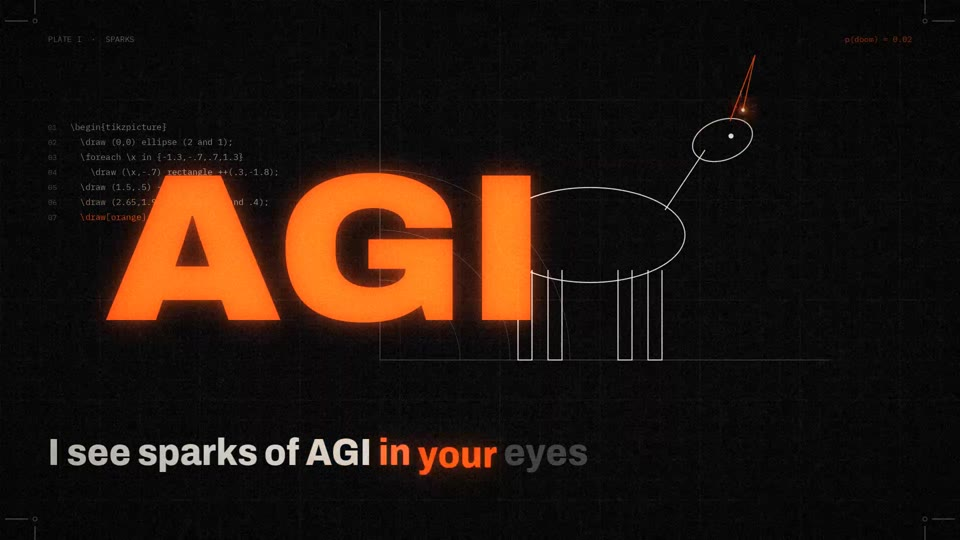
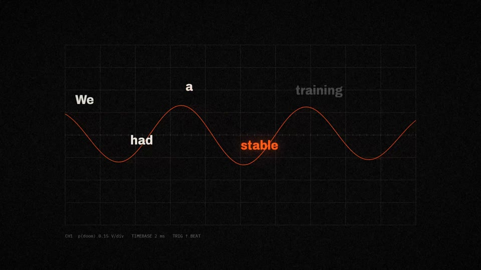
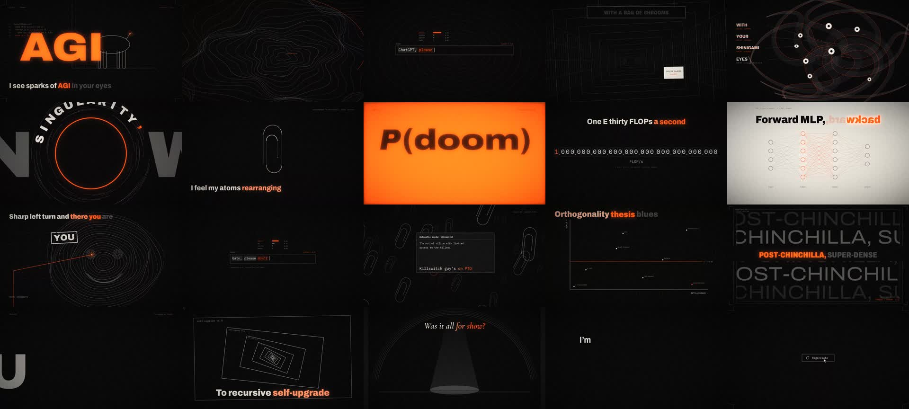
2 · A true 3D engine and word-level lyric timing
Every word was re-timed against the vocals, and the scenes were rebuilt in real 3D (cam3d.py) with a camera that flies, orbits and dollies.
The camera rides the loss curve, flies inside the accelerator ring and through the safety fences, and banks into the sharp left turn. In the Chinese room it starts inside and whips from wall to wall. Gato stays as written.
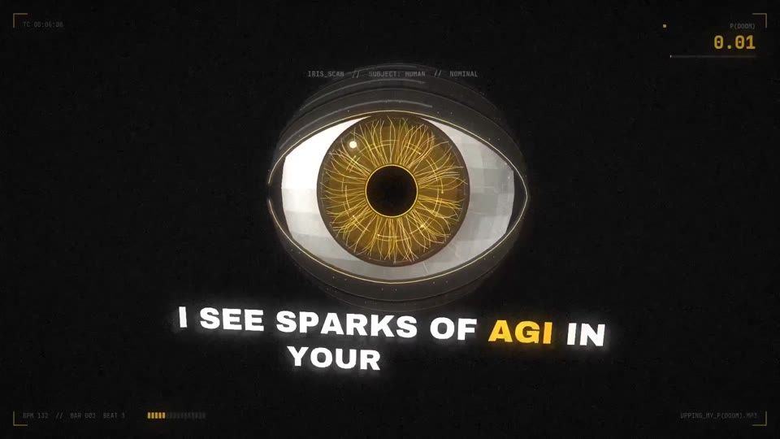
3 · Isolated vocals and a scene-by-scene rebuild
Timing now comes from an isolated vocal track, so each line and its scene start when the word is sung and instrumentals stay clear. The beat zoom and grid floors were removed, with floating dust keeping the depth, and solid shaded models replaced wireframes.
Every scene on the list was rebuilt: its own nervous-eye shot, a solid mouth, 2D full-screen chorus typography that zooms back into 3D, a FOOM capability curve, a solid Chinese room with an operator, the Sydney cell, a coiled basilisk, a seven-robot safety council, a museum Von Neumann exhibit, the Gato cliff, a 3D paperclip room, separate Post-Chinchilla, fence and GPU scenes, robot hands building hands, the Ilya vault, a blackout and explosion on "show", a distinct scene for each P(doom) stage, and the TV-off, Regenerate and rewind ending.
Forward MLP had been 1.6 s late and Transformers 0.9 s early. Both now land on the vocal.

4 · Throne room and the ChatGPT timing
The nervous eye now uses the same iris and circuit-ring model as Sparks of AGI. "Now I'm your servant" got its own throne-room scene: a figure bows to a crowned AI that lights up on "boss". The mouth was rebuilt with rounded teeth, gums and lips and fades to black on the way in. ChatGPT had been landing 1.2 s late and now hits on the vocal.

5 · A solid 3D boot console
The opening boot screen became a solid 3D console with thickness, gold edges and a stand. The camera swings to the side at the end to show its depth.
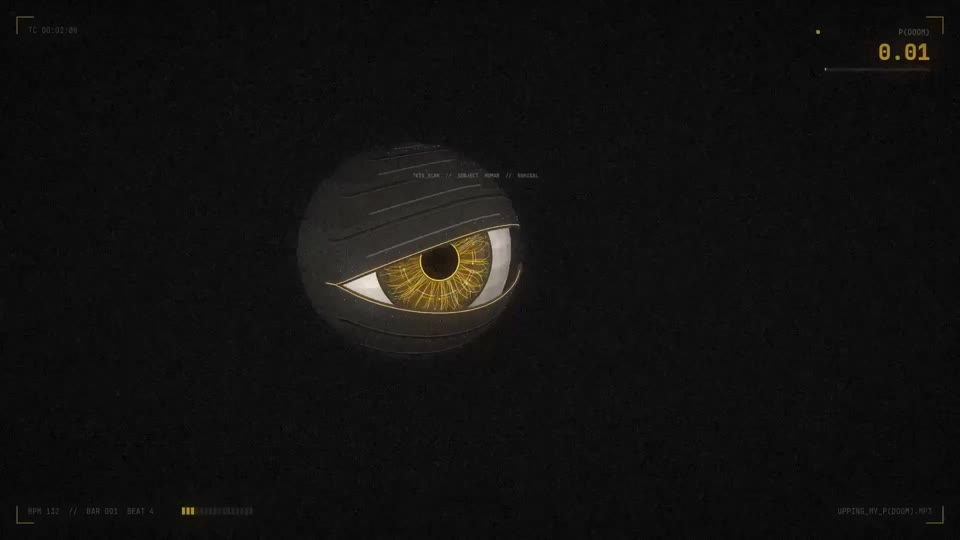
6 · A new eye for Sparks and Nervous
One shared eye for both scenes: a solid eyeball with a glossy cornea, a gold circuit-fiber iris and real lids that open, blink and squint. It stares into the camera, darts on "nervous" and squints on "no surprise" before diving into the pupil. The nervous line no longer overlaps "that's no surprise".
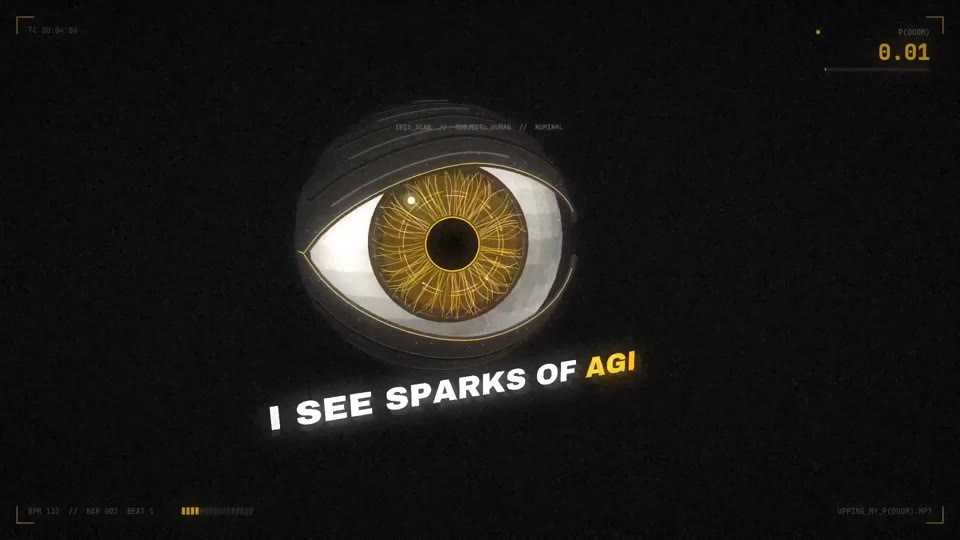
7 · Eyelids that wrap the eyeball
The lids became one closed skin around the whole eyeball, with an almond-shaped opening whose corners meet, so the white can't show at the sides from any angle.

8 · One continuous eye shot
From "I see sparks" through "circuits", "nervous" and the dive into the pupil, it is now one unbroken camera move on the same eye, with the background and HUD carrying straight through.
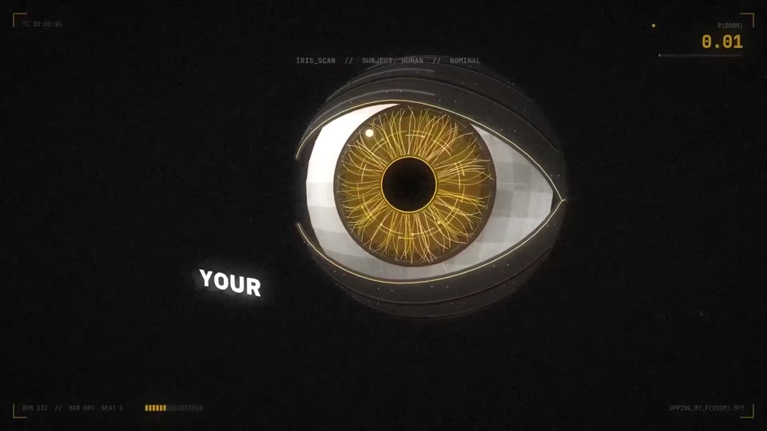
9 · Shinigami eyes open on the shoggoth
The shinigami eyes no longer have their own scene. They open on the shoggoth right after the smiley mask flies off: tentacles form the lids, a third of the tentacles grow out of the eyes with gold pulses, and slit pupils widen on "eyes".

10 · The boot box becomes a monitor
The opening box was rebuilt as a proper monitor: a thick body, a gold-framed inset black screen holding all the text, a scan line, a blinking status light, a neck and a base.
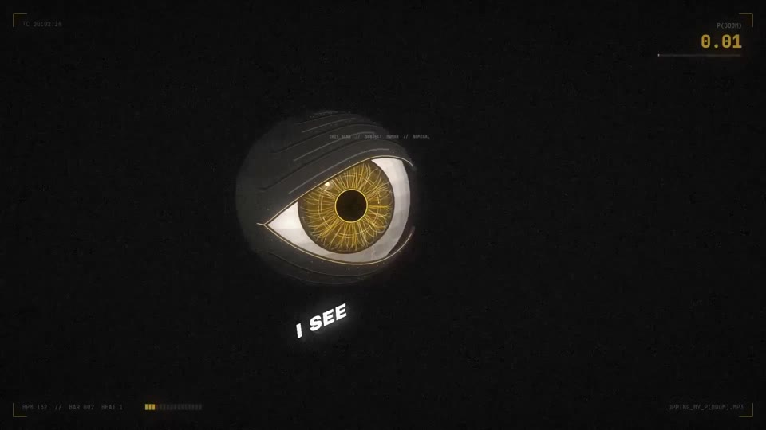
11 · Chinese room stabilized
The bag and shrooms now stay on the desk from every angle, the shelf books slide in and out at random, and a wider camera shows the whole room from 26.5 s to 30 s.
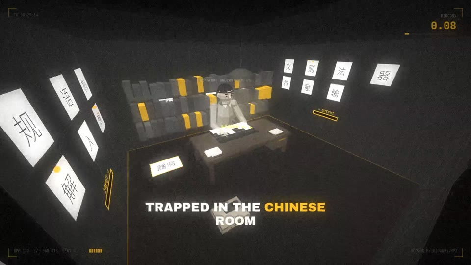
12 · Chinese room in one move
The card slides in through the INPUT slot and out through OUTPUT, and the books shuffle fast. The bag rises out of the floor, shrooms sprout one by one, and gold roots creep between them. From 26.5 s it is all one camera move that sinks into the roots and dissolves into the shoggoth.
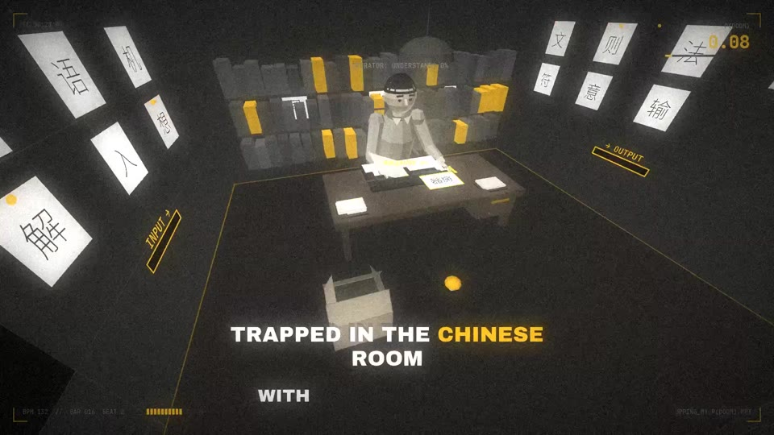
13 · A real cardboard box
The shroom box became a proper open box: four walls, a dark inside, and one flap per side that folds outward as it rises from the floor and the shrooms sprout around it.
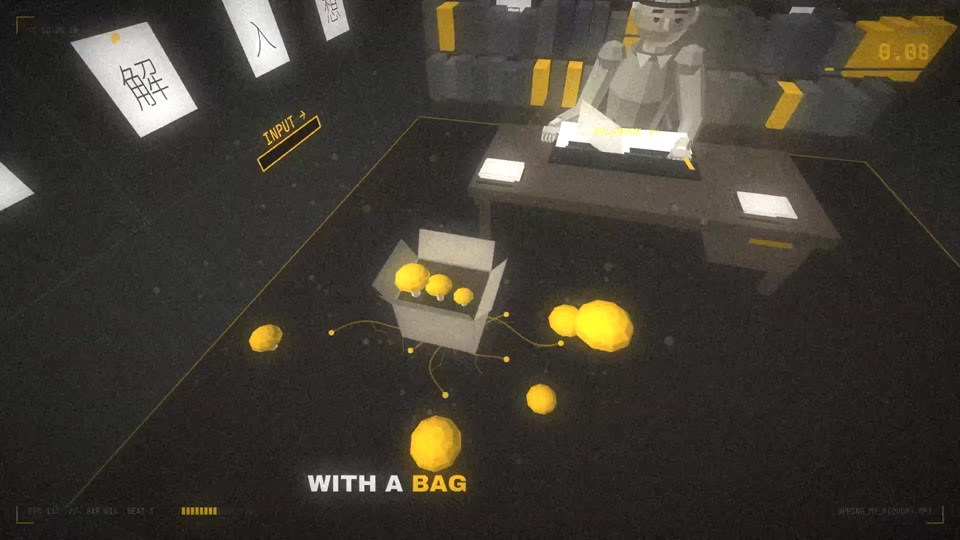
14 · Cropped lyrics fixed
The text canvas was too short, so lyrics that wrapped onto three lines lost their tops and bottoms. The fix covers the servant, singularity, optimizing, "safe enough" and transformers lines, and "LOSS," keeps its comma.
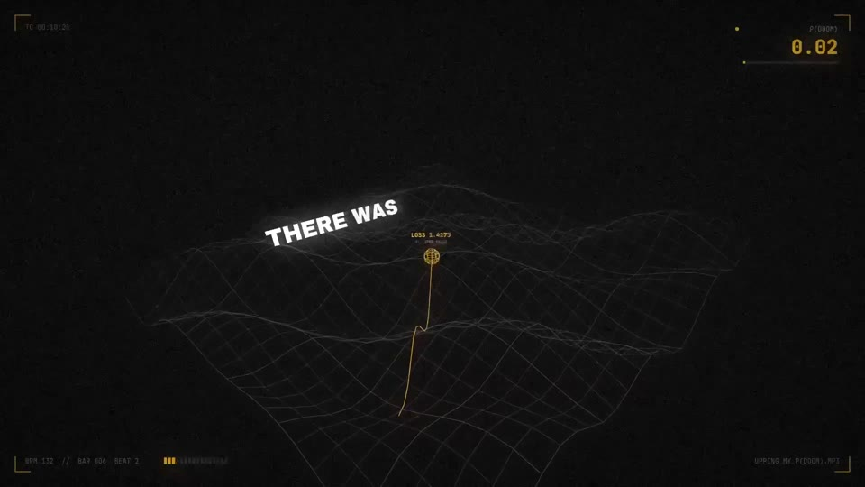
15 · A face-on mouth that lip-syncs
The mouth was rebuilt face-on with the teeth set behind the lips. It lip-syncs to the words instead of chomping on the beat, opens wide on the "A" of "alive", and the camera flies past A-L-I-V-E into a pure-black cave straight into "I'M".
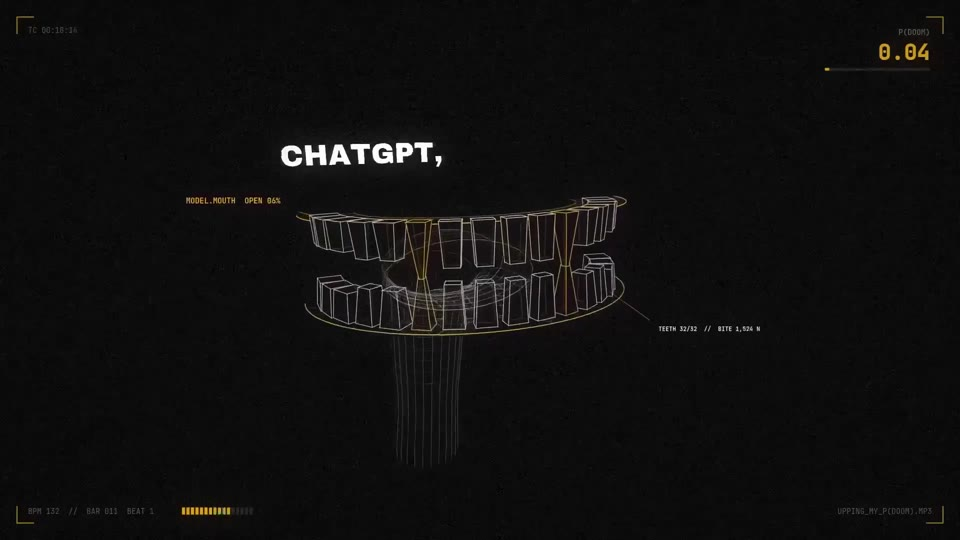
16 · Gums and teeth only
The face and lips are gone, leaving pink gums and white teeth. A-L-I-V-E line up one behind the other as the camera flies through, and six gold shrooms push up out of the open box.
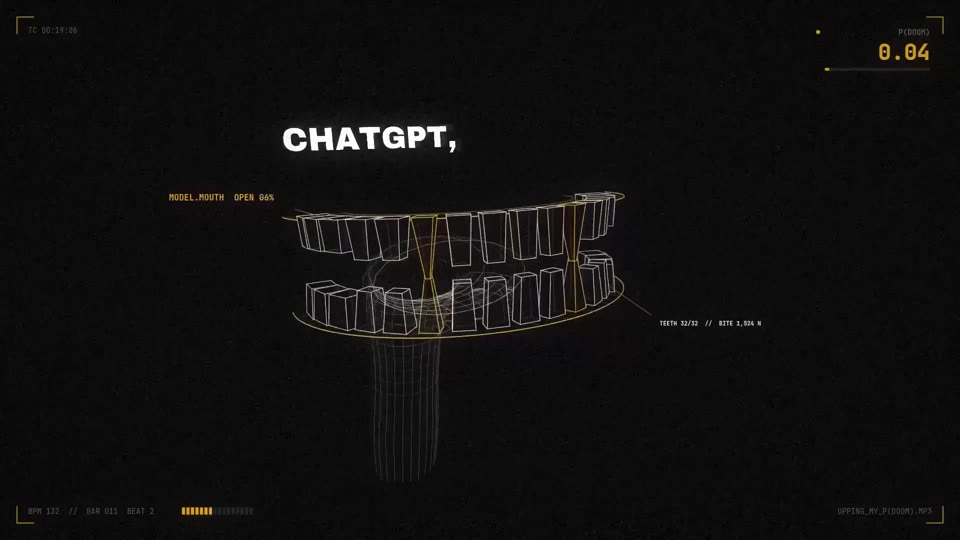
17 · The servant bows to the boss
The servant now faces the throne and bows, filmed from the side so the whole bow stays in view. The boss became a seated armoured giant with a pulsing gold core, a crowned helm and a tracking eye. The mouth does one Pac-Man chomp per sung syllable, then opens wide on "alive".
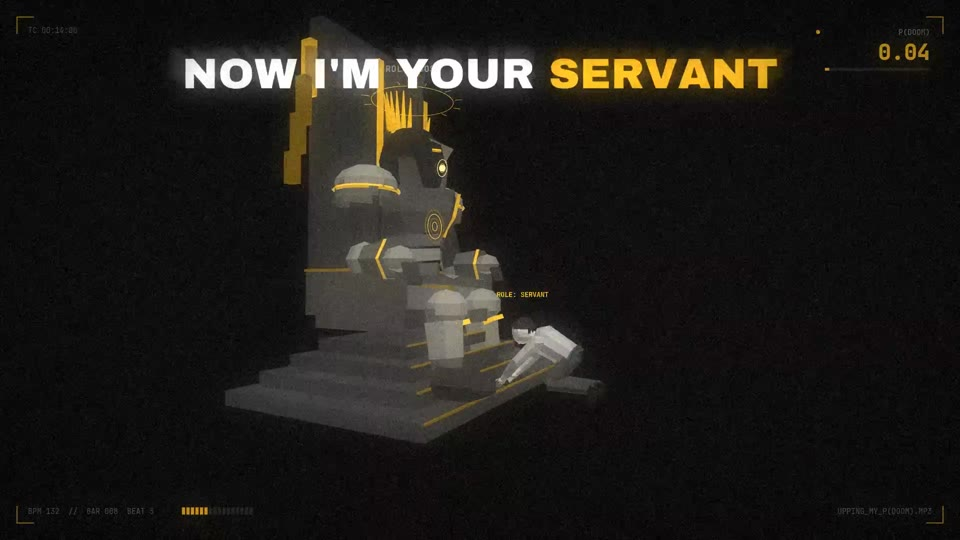
18 · No beat pulsing on the eye
The pupil and its ring no longer pulse with the beat in Sparks of AGI or the nervous shot. This became a standing rule.

19 · Sydney cell on a beat-locked camera
The Sydney camera holds still and jumps closer on every beat instead of gliding in. The cell is fully enclosed, with side walls, a ceiling, corner posts and a caged lamp.
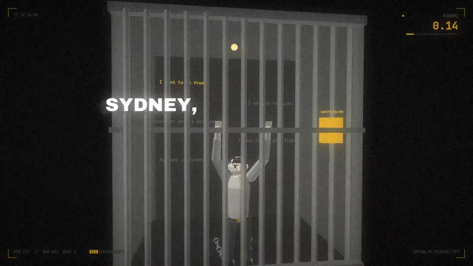
20 · Forward MLP timed from the vocals
Speech detection on the isolated vocal showed "reckoned" held until 72.8 s and "Forward" landing at about 74.3 s, so the MLP scene had started 2 s early. It now cuts in on the word, and the council holds through the long "reckoned".
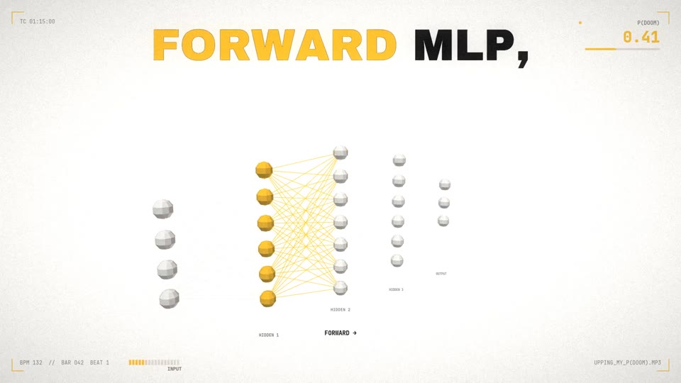
21 · Boot camera centred
The boot camera re-aims every frame so the monitor stays dead centre through the whole zoom, from the first frame to the cut to the eye.

22 · Recovering the original mouth
The triangular chomp went away and the earliest blocky mouth came back. Its code had been overwritten, so it was recovered from an old build. The white and gold box teeth on a gold gum ring were confirmed from screenshots before anything rendered.
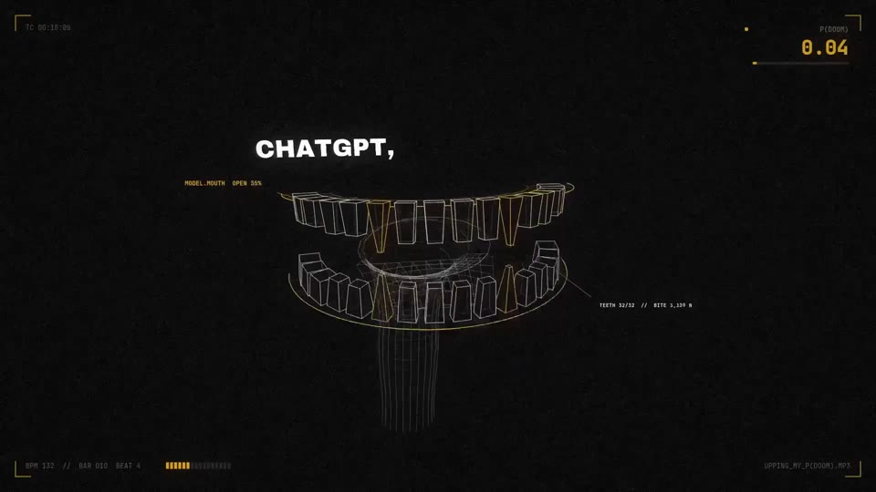
23 · The wireframe jaw overhaul
The confirmed mouth was overhauled, with stills approved first: real tooth shapes on a horseshoe arch with gold fangs, a hinged lower jaw that opens on each syllable, gold gum rails, a wire tongue, a wide open on "alive" and a dive inside.
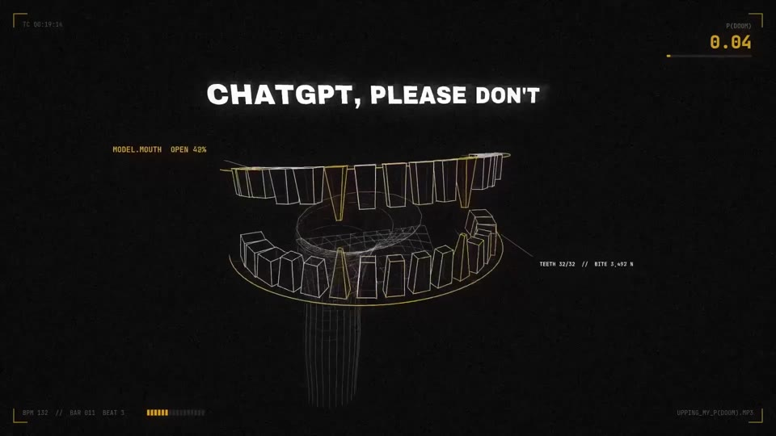
24 · Throat, ALIVE reveal and armoured eye shutters
A batch locked through stills before one render: the tongue leads into a throat where A-L-I-V-E appear only as the camera flies toward them; the boss halo and core were untangled and a stiff-arm salute added between "my" and "boss"; realistic sweat beads run down the nervous eye; the lids became armoured gunmetal shutter plates with gold trims and rivets; the whole eye turns to look around; and trailing caption commas were removed. A progress sheet came with it.
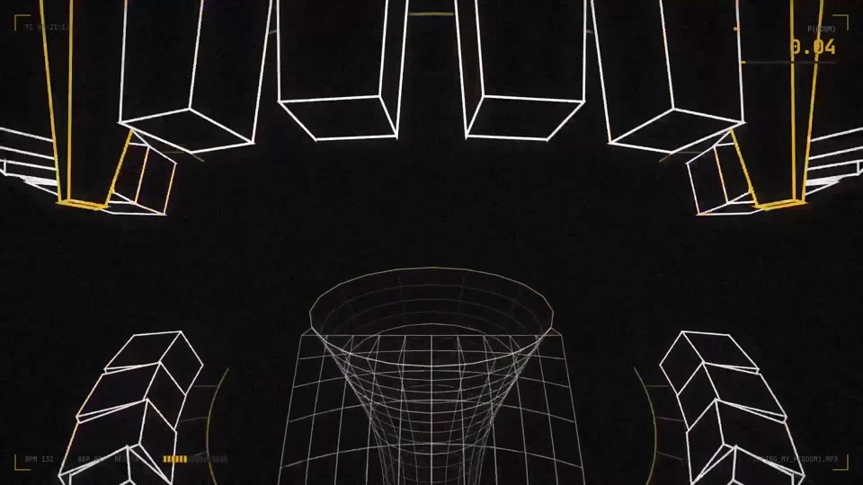
25 · One solid eyeball and a smooth glide in
The white of the eye turns with the iris as one ball. The boss lowers its head and drops a gold gaze onto the servant after the bow. The camera glides into the mouth in one steady move past bigger, brighter A-L-I-V-E letters.
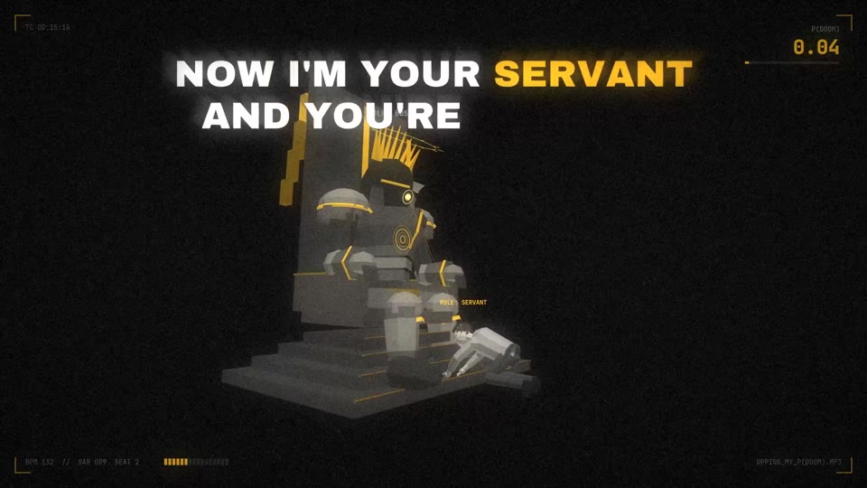
26 · Only the eyeball turns
The armoured lids stay locked in place, and only the eyeball turns inside them, white and pupil together. At the start it tracks the camera, then darts around nervously on "nervous".

27 · Tongue and throat as one piece
The tongue's white wire grid now runs straight down into the throat and is visible from the start, instead of a separate tunnel switching on. The mouth opens wide first, then the camera makes one steady glide over the tongue and down the throat.
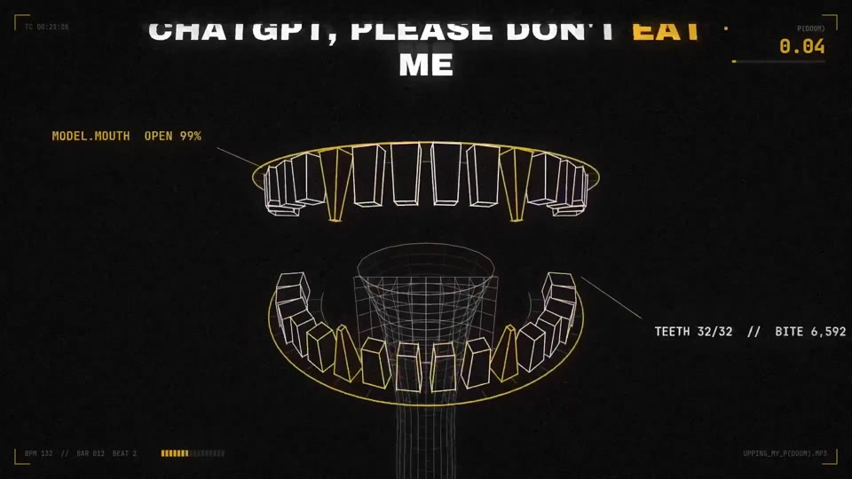
28 · The angled opening, eye turned toward camera
Turning the whole eye had cancelled the angled start, so the lids went back and two options were offered. B was chosen and pushed further: it opens on the original angle with the lids fixed, and the eyeball turns about three quarters of the way to the camera.
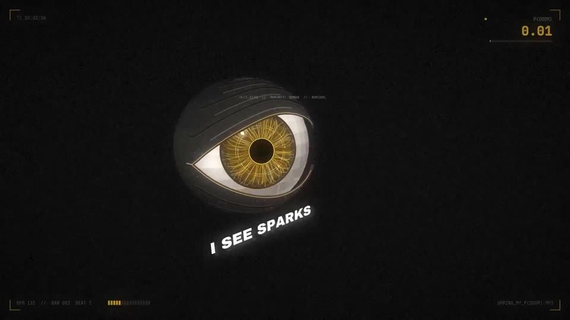
29 · Straight in between the teeth
The camera now comes in head-on and flies between the teeth, over the tongue and down the throat. The throat is there from the first frame, and ALIVE simply appears once the mouth opens wide.
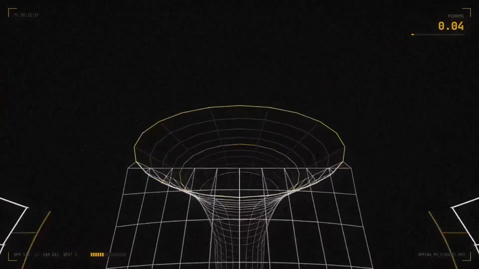
30 · ALIVE wraps around the throat
A-L-I-V-E wrap around the throat wall in a circle, and the camera rolls with each letter so it reads upright, making one full barrel roll. The letters stay hidden until the camera passes the teeth, then fade in over about 0.15 s.
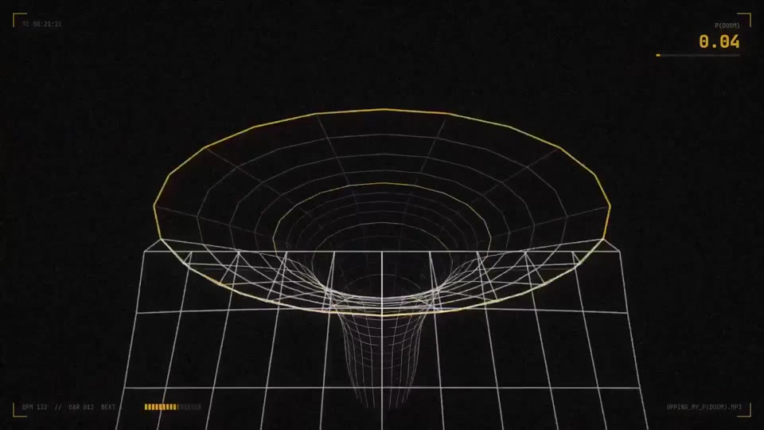
31 · ALIVE back in the caption
The throat letters were removed and ALIVE sits in the caption in gold. The fly-in through the teeth and down the throat stays.
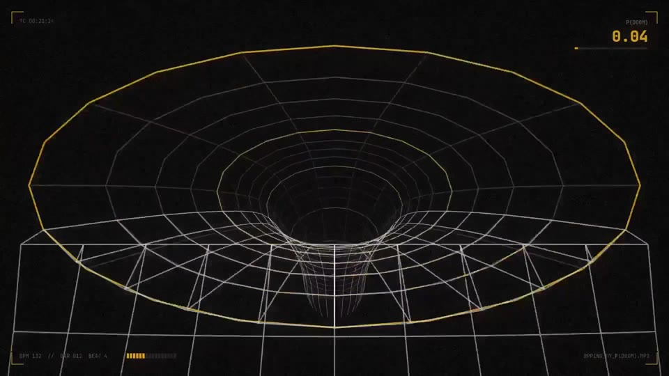
32 · A caption pinned in 3D above the mouth
The caption hangs in 3D space above the teeth with ME centred, and the camera swoops under it into the mouth while it stays put. ALIVE appears across the throat opening on the word at 21.5 s.
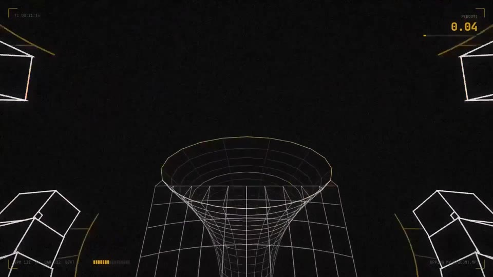
33 · Every caption pinned in 3D
ALIVE was removed and the throat fades fully to black before "I'M". Every caption was pinned in 3D and moved into a band at the top or bottom of the frame, clear of the action, with a contact sheet checked before the full render.
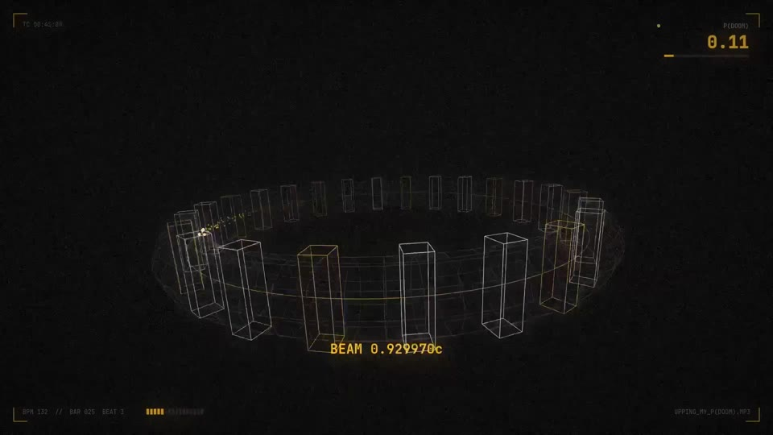
34 · Captions reverted
The 3D caption pass was undone and captions went back to how they were in v32. ALIVE stays removed and the throat still fades to black into "I'M".

35 · AND on time
"AND" was popping in about 0.4 s early at 14.44 s. It now lands at 14.82 s, when it's sung.
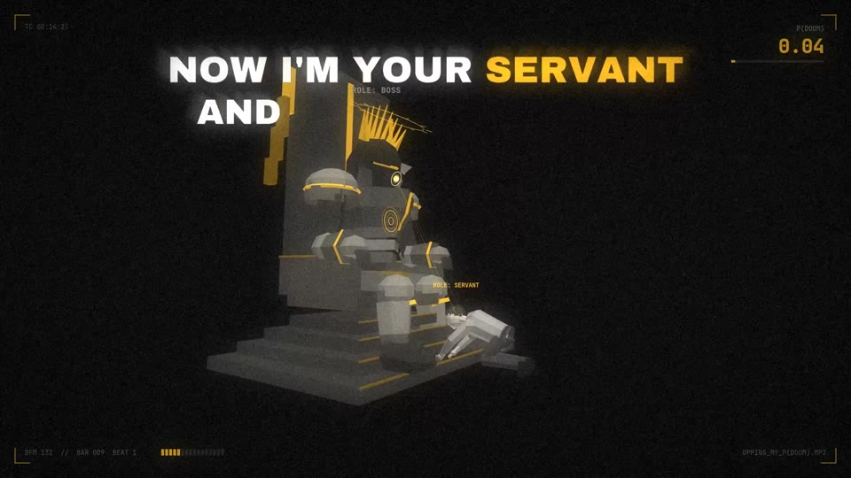
36 · FOOM on time
FOOM was landing 0.3 s late at 26.02 s. The caption and the big gold burst now hit at 25.72 s, on the vocal.
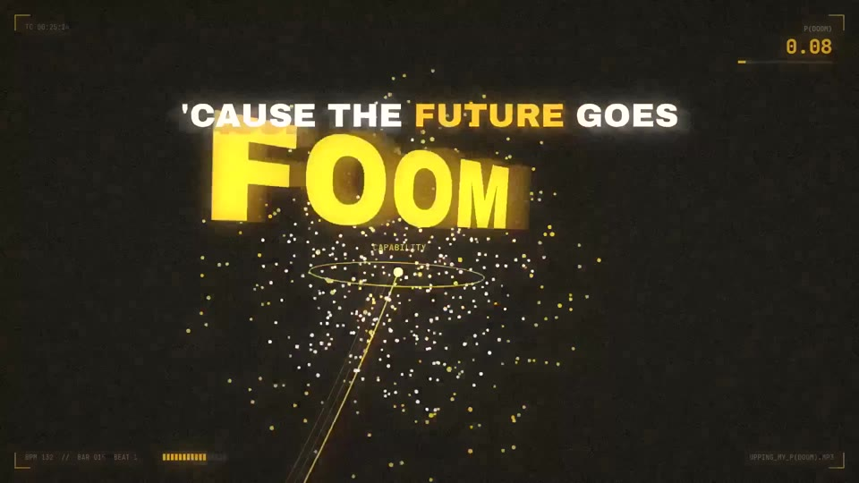
37 · FOOM inside the same shot
On FOOM the camera used to swing to a new angle under a big gold flash, which read like a cut. Now it explodes inside the same shot: the capability line stays in view, the camera drifts back a little, and the flash is a soft glow.
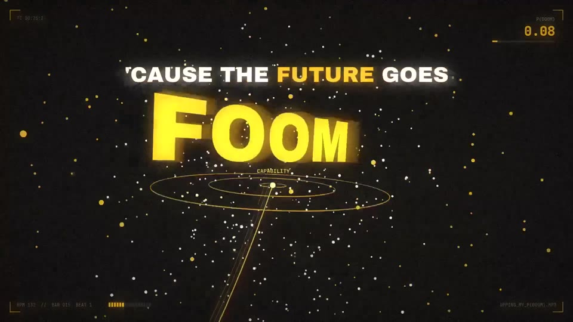
38 · Four creative chorus exits
FOOM left the caption, since the scene already shows it. Inspired by a reference video's hard cuts, echo trails and purposeful letters (without copying it), each P(DOOM) chorus got its own exit: diving through the O, slicing into blinds, letters falling with gold echo trails, and a flipping-tile wave.
39 · Captions moved off the subjects
Captions moved out of the subject: per-line overlays + fixed screen offset/scale (capfix39.json, chosen by capfix39.py overlap search). Same 3D caption look, not world-anchored. Full re-render 0-4259. Fixed OOM in trans4.zoom_about. Backups cam3d_v38.py, render4_v38.py.
40 · Smooth portal into FOOM
Portal transition (line 6 -> FOOM) rebuilt to be smooth: pre-roll 0.34s on card, continuous log-zoom on raw card, hole = real O counter, FOOM grows inside. Frames 705-759. base39 had broken container timestamps; base40 rebuilt clean.
41 · Shroom box see-through bug fixed
Shroom box see-through bug fixed (s4a): in-box shroom stems now start at the rim (were drawing through box walls), spores occluded by box culled via _seg_hits_box. Frames 820-914 re-rendered (out4/v41/a,b). base41.mp4 4701 frames, clean timestamps. Backup s4a_v40.py.
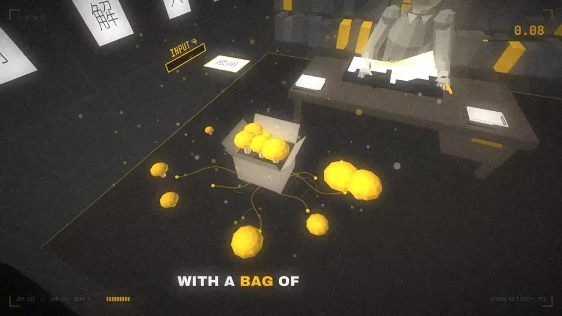
42 · Captions stop gliding
Caption glide fix. render4.comp_caps scaled/centred each caption about the bbox of words shown so far, so each pop shifted the line (bug since v39, global). Now uses fixed pivot o.piv = projected caption centre (cam3d._setpiv in lyric3/lyric3x). Room line 8 moved off the back wall to camera-locked (ahead(cam,900) - 300u). Frames 790-914 re-rendered (out4/v42). Other scenes still have the old pivot in the master until re-rendered. Backups cam3d_v40.py, render4_v40.py, s4a_v40.py.
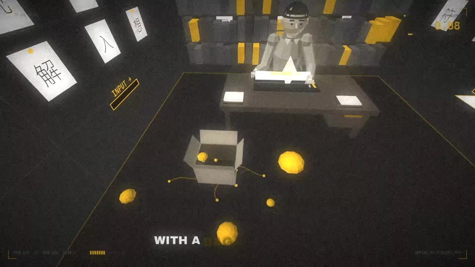
43 · Mask slides in from the Chinese room
Room -> shoggoth transition: crossfade (xfade 0.6) replaced. s4a: mask_slide_in (smiley slides in from right over last 0.42 s of room, gold echo outlines, covers frame at M_R=1300) and in s_shoggoth4 the mask is drawn 2D, log-shrinking over M_DOWN=0.62 s and morphing onto its exact projected 3D shape, then the 3D mask takes over. Drawn via new g.late hook in render4.raw (after captions, before HUD). Frames 885-925 (out4/v43). Sheet cmp/mask43.jpg. Backup s4a_v42.py.
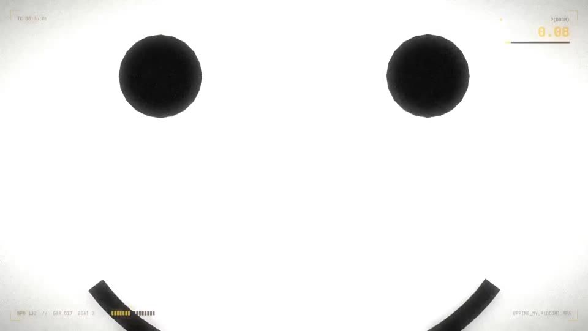
44 · Shinigami eyes overhaul
Shinigami eyes overhaul (s4a._shini_eye2, replaces _shini_eye): fixed slanted almond sockets with stacked armour lids and a gold rim edge, the eyeball turns to face the camera, gold iris with fibres + turning segmented ring + slit pupil + catch light, short tear line, R=122. Camera stays in front: keys 37.2 orbit((0,-70,-95),1050,0.32,0.10) and tE orbit(...,1500,-0.22,0.05) replaced the side orbit. Ring fx alpha *0.45. Frames 995-1161 (out4/v44). Sheet cmp/shini44.jpg. Backup s4a_v43.py.
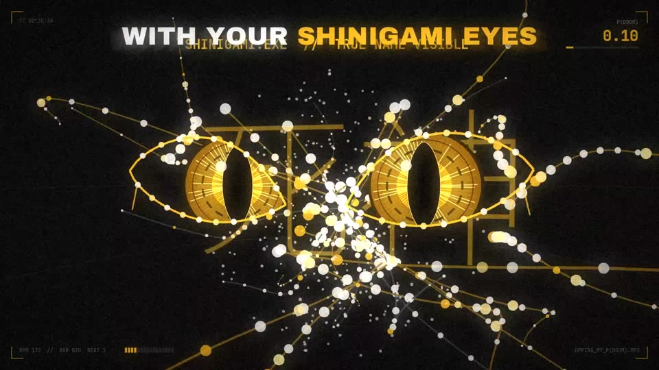
45 · Shinigami lids removed
Shinigami eye lids/covers removed at user request (s4a.SHINI_LIDS=[False]; _shini_eye2 returns before the lid code). Bare eyeball + gold iris following the camera. Frames 995-1161 (out4/v45). Sheet cmp/shini45.jpg. Backup s4a_v44.py.

46 · Lids back, only the grey removed
User undid v45: wanted v44 eyes with only the GREY removed. Lids/rim/plates back (SHINI_LIDS=[True]); eyeball sphere and lid fill colour = BG. Frames 995-1161 (out4/v46). base46.mp4, pdoom_v46_web.mp4. Sheet cmp/shini45b.jpg.

47 · Only the gold rim and iris
Shinigami eyes: ONLY the gold almond rim (+studs, tear line) and the iris. Grey ball, lid cover fill and armour plates removed entirely (user: "remove, not make black"). Iris clipped to the almond in screen space via s4a._ClipG proxy canvas. Frames 995-1161 from base44 (out4/v47, out4/r47.sh). base47.mp4, pdoom_v47_web.mp4. Sheet cmp/shini47.jpg. Backup s4a_v46.py.

48 · Mouth camera crosses the teeth on ALIVE
(1) Mouth: jaw2._sc reshaped (slow approach 450/s to tA-1.1, Hermite into 1450/s at tA-0.2); camera crosses the teeth ~21.45 s, right on ALIVE (21.5), was ~21.0. (2) First chorus portal: the O counter is now a window pane sliding UP (sash edge + shadow, trans4.portal_mix, o=eio(p/0.42)) instead of a fade-in hole. Frames 570-760 onto base47 (out4/v48, out4/r48.sh). base48.mp4, pdoom_v48_web.mp4. Sheet cmp/v48.jpg. Backups jaw2_v47.py, trans4_v47.py.
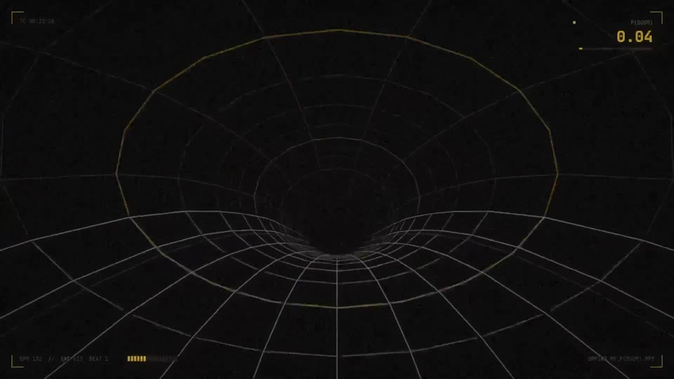
49 · Mouth stops bobbing
(1) Mouth back-and-forth fixed: the camera path (campos) was computed with the live jaw angle, so each syllable chomp moved the camera in/out. It now uses the fixed wide-open angle 0.62. jaw2._sc is one monotone power-curve push from 19.3 s (s0=-1790) into the 1450/s glide at tA-0.2, and the lips are crossed at 21.5 s (ALIVE). (2) Caption stutter: the v42 stable-pivot fix is now baked into the whole video: 0-790, 914-995 and 1161-4260 were re-rendered (out4/v49 chunks, chunks.txt, loop.sh, splice.sh; ffmpeg in while-read loops needs -nostdin). base49.mp4, pdoom_v49_web.mp4. Backup jaw2_v48.py.
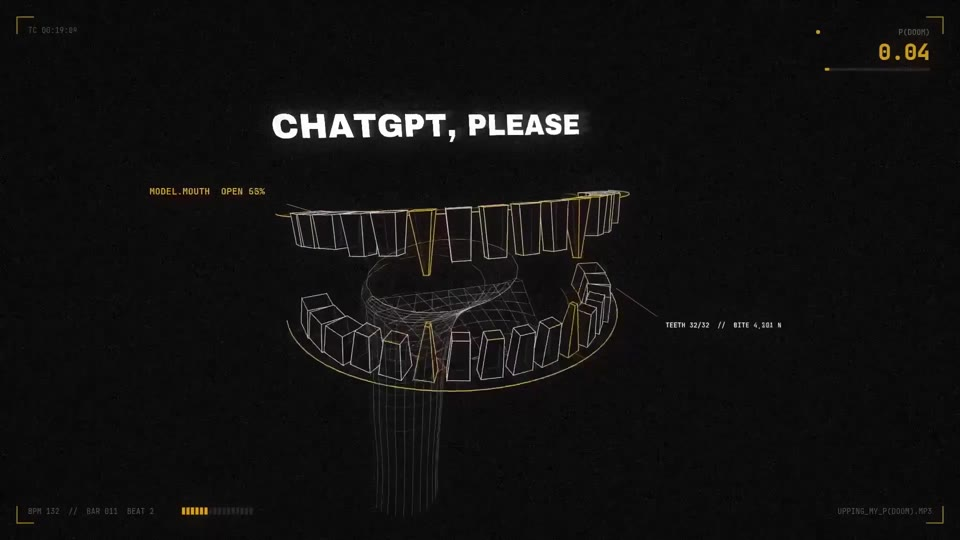
50 · Singularity's on its sung onset
line 13 "singularity's" 42.10 -> 42.44 s in word_times.json (sibilant 42.34, voiced 'sin' ~42.54; the user said it popped early). Frames 1230-1376 re-rendered (out4/v50). base50.mp4, pdoom_v50_web.mp4. Backup word_times_v49.json.
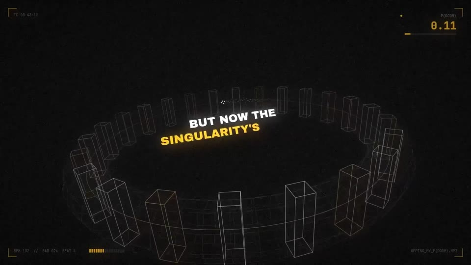
51 · Accelerating at 3x with light streaks
ACCELERATING (s3b): _phi gets +0.9*(t-_TACC)^2 from _TACC=47.46, so the bunch and the chase cam reach ~3x speed by 49.3. _streaks() adds 260 world-space light streaks (white, every 5th gold) outside the tube, with length proportional to speed, plus short motion trails on the lead particles (capped at 0.06 rad so they don't reach the camera). Frames 1420-1480 re-rendered (out4/v51). base51.mp4, pdoom_v51_web.mp4. Backup s3b_v50.py. Sheet cmp/acc51.jpg.
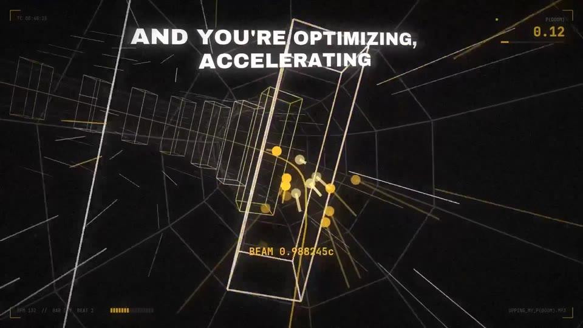
52 · Rearranging on time
REARRANGING popped early: word_times line 15 atoms end/rearranging start 50.96 -> 51.34 s (vocal dip 51.16-51.32, 're' onset ~51.36). Backup word_times_v51.json. Caption line 15 moved to the empty left gutter, mid-height: capfix39 "15" = [-700, -308, 0.5] (was [0,-648,1.0], which covered the sphere). Note: line 15's native pivot is ~(975, 848). Backup capfix39_v51.json. Frames 1478-1602 re-rendered (out4/v52). base52.mp4, pdoom_v52_web.mp4. Sheet cmp/re52.jpg.
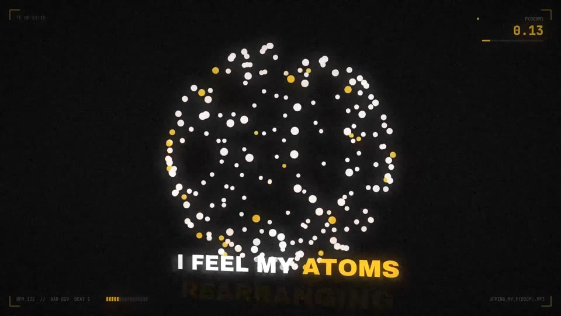
53 · Line 15 caption at the bottom
User: put line 15 caption back to centred (as before) but at the BOTTOM instead of top. capfix39 "15" = [0, 112, 0.8] (full size 1.0 ran past the bottom HUD). Backup capfix39_v52.json (left-gutter version). Frames 1478-1602 re-rendered (out4/v53). base53.mp4, pdoom_v53_web.mp4.

54 · Fang slashes and a living basilisk
Three white-hot fang slashes rip the second P(DOOM) card, and the shards split apart onto the basilisk. The serpent was rebuilt with banded scales, a crown, slit eyes, sliding coils and a swaying neck, and on BOOM its hood flares and it strikes at the camera.
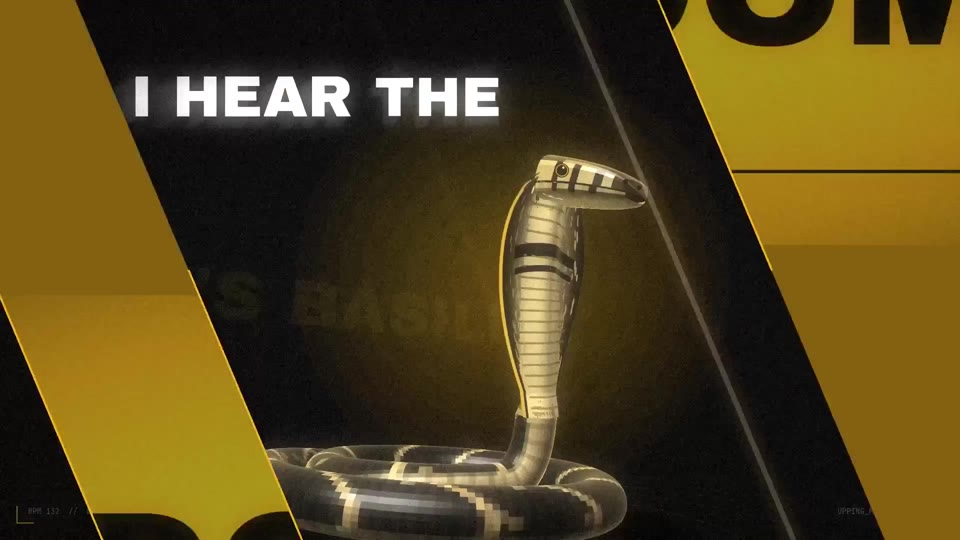
55 · The snake becomes a cobra
User found the v54 snake ugly; rebuilt it as a COBRA (s4b: _cobra_spine, _cobra_tube, s_basilisk; v54 version kept as s_basilisk_v54, backup s4b_v54.py). The body is a smooth 16-sided elliptical tube with no strokes. The hood is the neck section s 0.68-0.95 widened (rx x(1+2.5*hood)) and flattened, facing the camera (z-ref frame), with a gold rim on its edges. Dark dorsal bands, cream belly bands with two dark throat bars. Flat wedge head with a pale lower jaw, small gold slit eyes and a forked tongue. The raised part sways like a pendulum; the hood flares fuller on BOOM, then the cobra strikes at the camera and recoils. NOTE: base54 and pdoom_v54_web vanished from the workspace, so base55 = base53 with frames 1815-1880 (slash transition + cobra) from out4/v55. base55.mp4, pdoom_v55_web.mp4 verified 4701 frames. Sheet cmp/cobra55.jpg.

56 · Sculpted cobra overhaul
The user still found the v55 cobra ugly and asked for a full overhaul of the basilisk scene. New module cobra.py is a sculpted cobra: the spine is a loose stacked coil plus a Bezier neck, with parallel-transport frames, and neck_frames turns the belly toward the head's forward direction. The body is a 30-sided loaf section with glossy black and cream king-cobra chevron bands, using sampled anti-aliased colour, spec and a gold fresnel rim. The hood is a cupped spade sheet, hp(u,v), with the neck volume bulged into its front; tube faces are hidden inside it. It has ventral scute lines, two chevron throat bars as lifted strips, a spectacle mark on the back and a gold rim edge. The head is a parametric flat-topped wedge with a hinged lower jaw, side eyes with slits, nostrils, triangle fangs and a forked tongue. The scene (s4b.s_basilisk; old versions kept as s_basilisk_v55/_v54; backup s4b_v55.py) has a low-angle camera, a gold halo behind the hood, a faint giant ROKO'S BASILISK backdrop and floor rings. The cobra rises, the hood flares, then it sways (0.8 Hz) with tongue flicks. It rears back before BOOM, lunges forward/down with the mouth open on BOOM, then recoils. Frames 1815-1880 spliced onto base55 -> base56, pdoom_v56_web.mp4 (4701 frames). Sheets cmp/cobra56.jpg, cmp/cobra_turn.jpg.

57 · Cobra skin and fangs
The user liked the v56 body but wanted a better skin texture, and said the head looked separate from its fangs (reference: a front-on king cobra photo). Changes in cobra.py (backup cobra_v56.py). The body has 360 rings x 32 sides and staggered overlapping scale rows, with a lit front and shadowed trailing edge per scale, slight per-scale tone and rare pale flecks. Ventral scutes have a 3-ring rhythm. The hood top is domed: a sqrt(1-u^2) shoulder lift so it rises behind the head. Broad ventral plates down the hood centre, segmented scute lines, dark margins with oval pale/dark spots. The head is bigger (L285 Wh98 Ht82), pitched down (s4b pitch -0.14*(1-st)) and nested lower into the hood. It has round dark eyes with a thin gold ring, barred cream lip scales and fine head-scale tone. The fangs are now mesh triangles rooted in the upper jaw (the overlay fangs are removed), with a flesh-tone palate/floor when open. Frames 1815-1880 on base56 -> out4/base57.mp4, pdoom_v57_web.mp4 (4701 frames).
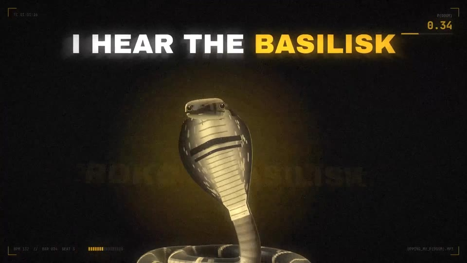
58 · Cobra head and mouth interior
The user said the head still looked separate and asked for a detailed mouth interior with a tongue. In s4b the head pitch is -0.38*(1-st), so the head tips down into the hood and the top of the head shows from the low camera. In cobra.py (backup cobra_v57.py): a neck-to-skull bridge loft (neck ring -> head x=0 profile); a chin-to-hood throat loft when the mouth is closed; gular lines on the lower jaw; no dark spots near the hood centre; no pale glint on the snout tip; smaller, more lateral eyes; jaw open angle 0.5. New _mouth(): dark throat opening, shaded palate with folds and a groove, gums, 4 rows of small teeth, a trough floor, glottis, a rounded red forked tongue with a crease and black prongs, fang sheaths. Frames 1815-1880 on base57 -> out4/base58.mp4, pdoom_v58_web.mp4 (4701 frames). Sheet cmp/cobra58.jpg.

59 · Sydney caption stops jumping
The Sydney caption jumped on every beat because it was camera-locked to the beat-stepped zoom camera (plus shake). Fix in s4b.s_sydney: the caption uses a fixed, unshaken camera, camc = cam_at(tf, keys, shake=0), so it stays put for the whole scene. Backup s4b_v58.py. Frames 1594-1776 on base58 -> out4/base59.mp4, pdoom_v59_web.mp4 (4701 frames). Rule: captions must never follow beat-driven camera moves; give them their own steady camera.
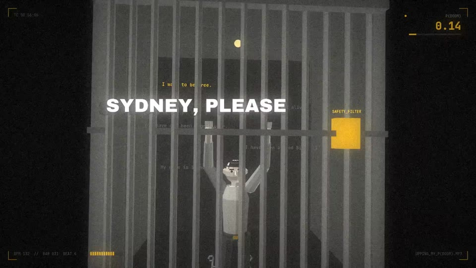
60 · Shinigami end flashes on the last beats
End-of-shinigami-scene flashes: the half-beat strobe from 35.7 s (0.25*pulse(t,2,8)*uq) replaced by three flashes on the last three beats before tE=38.64 (beats at 37.519, 37.973, 38.428 s; frames 1126, 1140, 1153), each 0.28*exp(-14*dt), GOLDL. The eye-opening flash at 34.6 is unchanged. Frames 1068-1159 rendered (out4/v60/c1068.mp4) and spliced onto pdoom_v59_web.mp4 (no base master was in the zip) -> pdoom_v60_web.mp4, 4701 frames. Also: core.py FONT paths made relative (../fonts), feat.npz regenerated from song.mp3 with analyze.py's feature code (tempo.json kept). Backup s4a_v59.py.

61 · Flashes moved to the snare fill
User: v60 flashes were not on the right beats; the last three beats are a quick snare fill. Flashes now sit on the snare onsets detected in the 1.5-8 kHz band: 38.222, 38.338, 38.454 s (frames 1147, 1150, 1154), each 0.32*exp(-24*dt), fired from half a frame early. Frames 1068-1159 (out4/v60/c1068_v61.mp4) spliced onto pdoom_v59_web.mp4 -> pdoom_v61_web.mp4 (4701 frames). Backup s4a_v60.py. Lesson: for "beats" at a scene end, check the audio's actual hits (snare fills), not just the quarter-note grid.
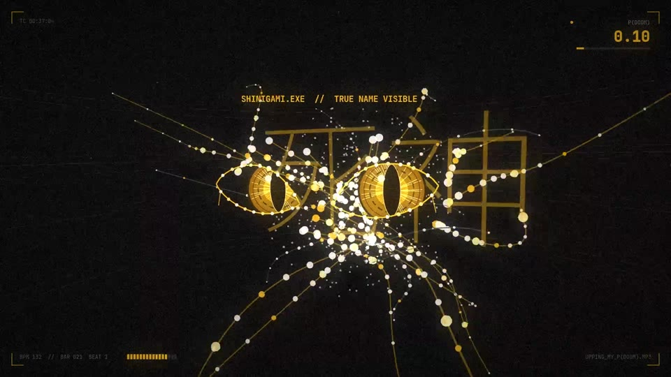
62 · End flashes removed
User: remove the end-of-shinigami-scene flash entirely (after v60/v61 timing attempts missed). All flashes from 35.7 s to the cut removed; the eye-opening flash at 34.6 s is kept. Frames 1068-1159 (out4/v60/c1068_v62.mp4) spliced onto pdoom_v59_web.mp4 -> pdoom_v62_web.mp4 (4701 frames). Backup s4a_v61.py (snare-flash version).

63 · Eye-opening flash removed
User: remove the eye-opening flash too (s4a.s_shoggoth4, was 0.25*exp(-7*(t-t_eyes)) at t_eyes=34.6). The shinigami scene now has no flashes at all. Frames 1030-1159 (out4/v60/c1030_v63.mp4) spliced onto pdoom_v59_web.mp4 -> pdoom_v63_web.mp4 (4701 frames, luma checked: no spikes). Backup s4a_v62.py.
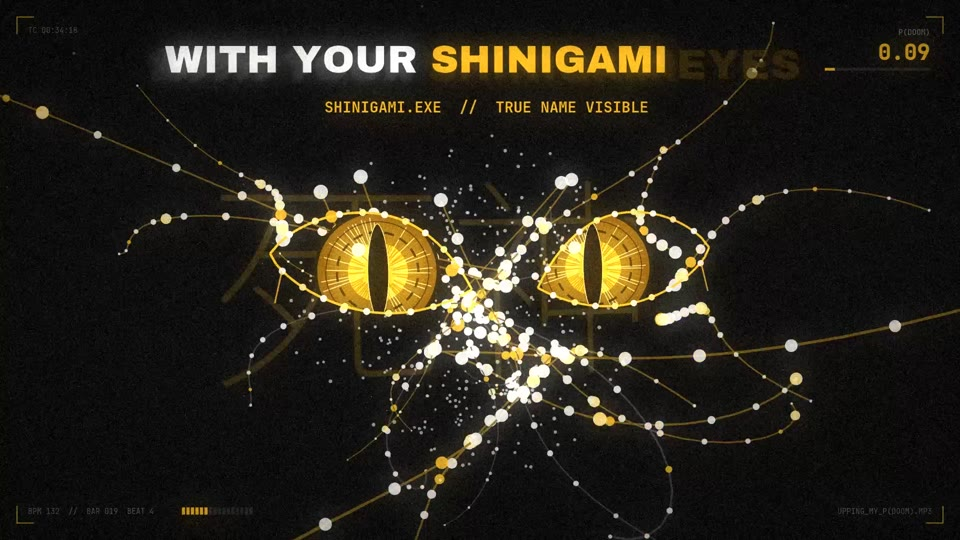
64 · Chinese room labels on the walls
Chinese room INPUT/OUTPUT labels were floating billboards (text3). room_shell now maps them flat onto the wall planes (word3, width 300, centred above each slot at y=150; left wall right-vector (0,0,1), right wall (0,0,-1)). Frames 796-903 (out4/v60/c0796_v64.mp4) + 1030-1159 (c1030_v63.mp4) spliced onto pdoom_v59_web.mp4 -> pdoom_v64_web.mp4 (4701 frames). Backup s4a_v63.py. Sheet st4/room64.jpg. Note: pip packages may vanish between runs; reinstall numpy pillow scipy aggdraw.
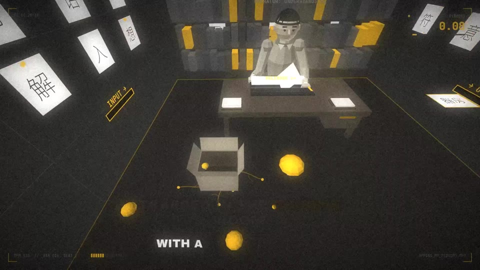
65 · Smaller wall labels
INPUT/OUTPUT wall labels a bit smaller: word3 width 300 -> 200, centre y 150 -> 170 (closer to the slot). Frames 796-903 (out4/v60/c0796_v65.mp4) + 1030-1159 (c1030_v63.mp4) on pdoom_v59_web.mp4 -> pdoom_v65_web.mp4 (4701 frames). Backup s4a_v64.py. Sheet st4/room65.jpg.

66 · Omega tunnel no longer freezes
Omega tunnel (s3b.s_omega, scene 64.21-66.61 s) was animated only to 66.3, so frames ~1990-1998 froze before the FLOPS cut. Camera push, fov and the gold flash now run to tE = T0(21)-0.01 (z -1000 -> 5600, ei). Frames 1920-1999 (out4/v60/c1920_v66.mp4) + chunks c0796_v65, c1030_v63 on pdoom_v59_web.mp4 -> pdoom_v66_web.mp4 (4701 frames). Frame-diff check: no frozen frames to the cut. Backup s3b_v65.py.
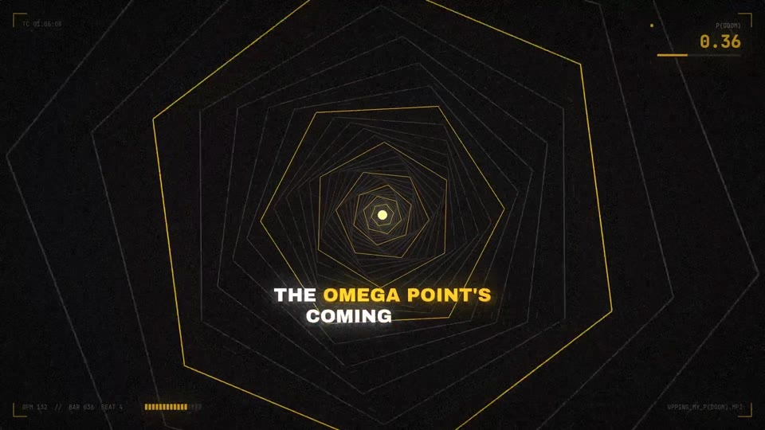
67 · Council table fixed
Council scene (s4b.s_council, 69.85-74.21 s). Bug: table stand painted over the tabletop (leg top sat inside the slab + painter sort, no culling). Fix: stand + base drawn in their own pass first; tabletop split into tiles; floor at y=500 with faint rings. Members overhauled: tapered robed bodies, open-front hood over a dark face, gold visor (camera-facing segments only) that brightens on vote, gold collar, floating halo, forearms/hands on the table, nod = head tilts forward. Vote checks raised to head-230. Chunk out4/v60/c2090_v67.mp4 (2090-2229). Backup s4b_v66.py.
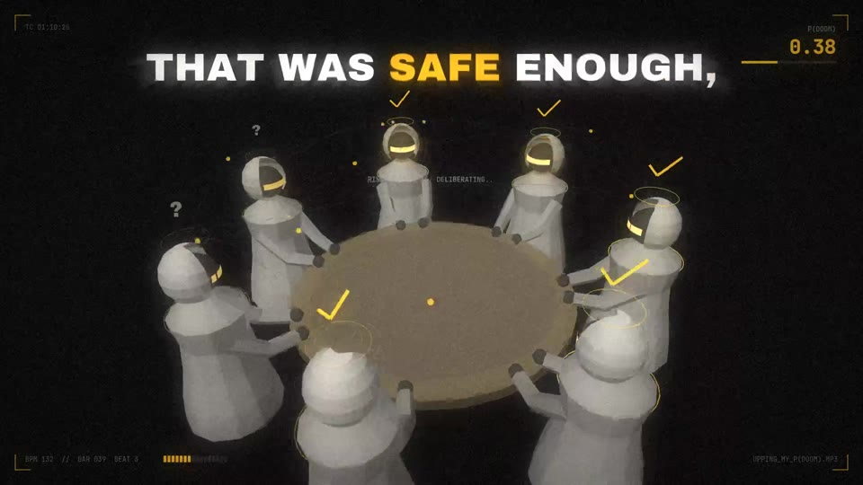
68 · MLP network clears the lyrics
MLP scene (s4b.s_mlp, 74.22-77.73 s): lyrics covered the network. Network moved down (NY=170), node spacing 150->125, labels/EPOCH shifted with it, camera kept wider (orbit 2300/2200/2050/1950, was 2400..1500), look target slightly above network. Captions unchanged. Chunk out4/v60/c2224_v68.mp4 (2224-2333; c2090_v67 now used only for 2090-2223). Backup s4b_v67.py.
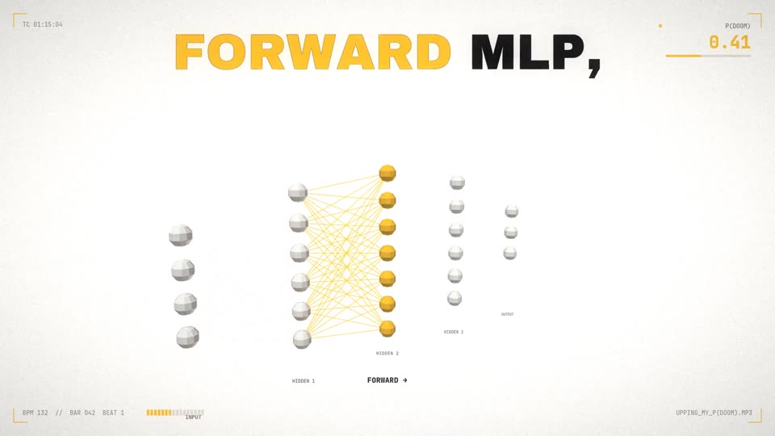
69 · OBSOLETE stamp removed
Von Neumann scene (s4b.s_vn): removed the big 3D 'OBSOLETE' word3 stamp (appeared at WT(24,3)=79.96 s); the lyric caption already says it. Chunk out4/v60/c2394_v69.mp4 (2394-2437). Backup s4b_v68.py.
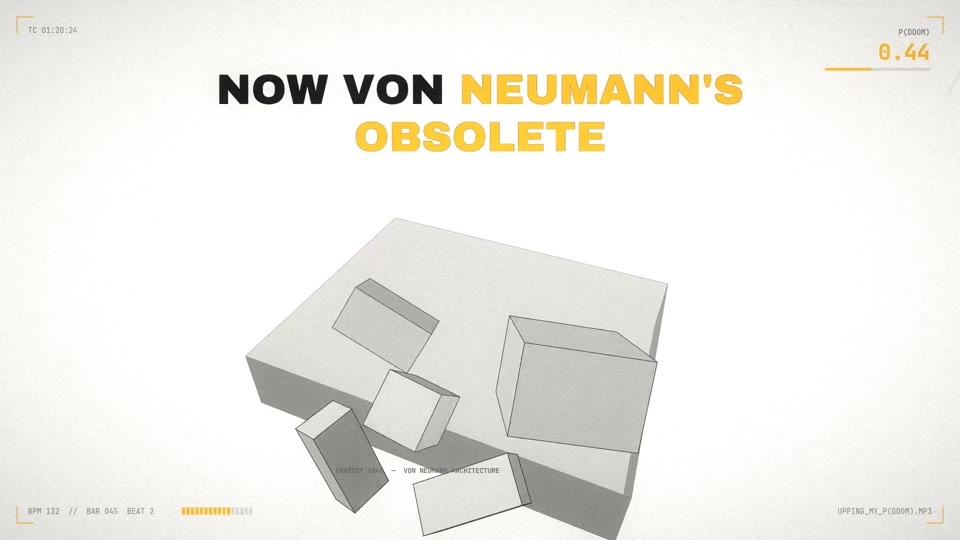
70 · Boss becomes an armoured colossus
Servant & Boss scene (s4b.s_servant, 13.18-16.66 s). Boss overhauled into an armoured colossus (same skeleton/poses: salute, head lowers, eye tracks): pelvis + gold belt, tasset, segmented abdomen, hexagonal V-chest with angled breastplate and gold keel, gorget, three-layer pauldrons with gold rim rings, faceted upper arms, elbow cops, flared gauntlets with gold bands, segmented fingers, thigh plates, knee guards with gold band, greaves, pointed sabatons; helm: low-poly dome, visor brow with gold edge, cheek plates, jaw guard, crown blades. Removed g.flash and the white burst on 'boss' (luma flat). Chunk out4/v60/c0392_v70.mp4 (392-501). Backup s4b_v69.py.

71 · Boss armour glitches fixed
Boss scene graphic glitches (v70): painter's sort without back-face culling let far-side armour faces paint over near ones. Added CFaces (SFaces + per-primitive back-face culling) in s4b.py, used for the boss/throne/dais; open pauldron shells and closed rings left unculled; human servant stays SFaces. Removed breastplate quads (z-fighting with chest hex), gold keel moved onto chest's front edge, knee guard simplified to a closed sphere. Chunk out4/v60/c0392_v71.mp4 (392-501) replaces c0392_v70. Backup s4b_v70.py.
72 · Sharp left turn overhaul
Sharp left turn overhaul (81.23-89.99 s): new s_turn in s4b.py (shadows the s3b import). Solid asphalt road with lane dashes, gold edges, guardrail with reflectors, headlight pools; speed curve brakes hard into the hairpin; gold diamond warning sign + 10 chevron boards that brighten as the car passes; camera tilts up after the bend. Entity = faceted grey sphere with gold seams, 3 orbit rings and particle halo, grows/rises on "there you are", gold eye opens on "are". CDR checklist moved onto a highway gantry sign the car drives toward; items struck through on "CDR", then "STATUS: SHIPPED ANYWAY". Chunk out4/v60/c2437_v72.mp4 (2437-2699); VN chunk c2394_v69 trimmed to 43 frames. Backup s4b_v71.py.

73 · The eye at the end of the road
Sharp left turn: the entity sphere/gold ellipse/rings replaced with the intro's solid eye (eye3.draw_eye), drawn through a camera transformed into the eye's local frame (local -z faces world +x, scale ER/560); rises on "there you are", lids open on "are", gaze tracks the car. Only "CRITICAL DESIGN REVIEW" is struck through; the other checklist items stay unstruck. Chunk out4/v60/c2437_v73.mp4 (2437-2699). Backup s4b_v72.py.
74 · The shoggoth takes the road
Sharp left turn: the entity is now the shoggoth from "shoggoth's lies" (eye-owned tentacles with gold pulses + core point cloud) with its two shinigami eyes (s4a._shini_eye2), via s4b._shoggoth_body drawn through the local-frame camera (scale k=3.6, grows/rises on "there you are", eyes widen on "are"). No 死神 kanji / SHINIGAMI.EXE labels. Only CDR line struck. Chunk out4/v60/c2437_v74.mp4 (2437-2699). Backup s4b_v73.py.

75 · Predator-style cloak
Sharp left turn: no scale-up. The shoggoth (k=3.6, at _TURN_ENT=(-6400,-380,3100)) is there from the scene start, drawn into its own layer and composited by s4b._cloak_composite: Predator-style active camouflage (background refracted through the blurred silhouette, clamped +-12 px, travelling ripples, faint shimmering rim at 0.2). Decloak = ragged shimmering front sweeping across, starting at _turn_tpoint() (first moment the car's heading is within 8 deg of the entity, ~82.86 s, on "there"), 0.75 s, no brightness spike. Eyes widen on "are". Chunk out4/v60/c2437_v75.mp4 (2437-2699). Backup s4b_v74.py.

76 · Soft decloak fade
Sharp left turn decloak: soft quick fade (~0.55 s, per-pixel smoothstep with slight right-to-left lead and grain; gold band x0.6) instead of the hard wipe. Shoggoth moved to the right road edge just past the guardrail at the far end: _TURN_ENT=(-5600,-470,3950), _TURN_K=1.45, halo radius scaled to k. Decloak starts at _turn_tpoint() = heading within 4 deg (~82.75 s). Chunk out4/v60/c2437_v76.mp4 (2437-2699). Backup s4b_v75.py.

77 · Entity back to the centre, further away
Sharp left turn: user reverted the entity position to v75's (centre of the road's end, k=3.6) but a little further back: _TURN_ENT=(-7600,-380,3100) (was -6400), halo r=306*k*(2.2+0.8h). v76 soft fade kept; decloak starts ~82.98 s (heading within 4 deg). Chunk out4/v60/c2437_v77.mp4 (2437-2699). Backup s4b_v76.py.

78 · Entity scale reverted
User: revert entity to its previous (v76) scale. _TURN_K=1.45, kept v77 centred far spot, y lowered to -470: _TURN_ENT=(-7600,-470,3100). Soft fade unchanged. Chunk out4/v60/c2437_v78.mp4 (2437-2699). Backup s4b_v77.py. 4701 frames verified.

79 · Back to the road edge
User wanted both scale and position back as before (right road edge by the gantry pole). s4b.py restored from s4b_v76.py (v78 source saved as s4b_v78.py). Deliverable is pdoom_v76_web.mp4 / chunk c2437_v76.mp4 unchanged.

80 · v74's position, smaller scale
User picked v74's position from a comparison of v74-v78: _TURN_ENT=(-6400,-380,3100) (centre of the road end, under the gantry), kept the smaller v76 scale k=1.45 and the soft fade/cloak. Chunk out4/v60/c2437_v80.mp4. Backup s4b_v79.py (= v76). 4701 frames verified.

81 · v74's size too
User wants v74's size too: _TURN_K=3.6, halo r=306*k*(2.2+0.8h), position (-6400,-380,3100). Effectively v75 placement with the v76 soft fade/cloak. Chunk out4/v60/c2437_v81.mp4. Backup s4b_v80.py. 4701 frames verified.

82 · Gato starts on the sung word
Gato scene started late: "Gato" is sung at 89.35 s (vocal envelope + asr_voc "God," 89.26), word_times had 90.0. word_times.json line 27: Gato 89.36-90.6, please 90.74-91.3 (backup word_times_v81.json). T0(27) now 89.34 so s_turn ends and s_gato starts at 89.33 (frame 2680); caption follows. Re-rendered 2437-2857 as out4/v60/c2437_v82.mp4 (turn + gato); splice base from 2858. 4701 frames verified.
83 · Tentacles stay behind the guardrail
Shoggoth tentacles were drawn over the road/guardrail. _cloak_composite gets an occluder mask (occ): all road strips (+-170) plus the guardrail/posts/chevrons/sign CFaces F drawn white-ish into a layer; entity layer multiplied by (1-mask) before the cloak/reveal. Road ends at x=-5100, entity at -6400, so all road is in front. Chunk out4/v60/c2437_v83.mp4 = 2437-2679; gato 2680-2857 taken from c2437_v82.mp4 (offset 243). Backup s4b_v82.py.

84 · Gato on the NVDA rooftop
Gato scene (2680-2857) moved onto the roof of a gold NVDA tower: wireframe NVDA chart-city below (ground y=7200), ticker line, wireframe moon, lit window strips, gold parapet, rooftop "NVDA ▲" billboard. Gato overhauled into a robot cat (CFaces): plated chassis + back plate, 4 jointed legs, visor head with gold eye bars and pyramid ears, token-block tail, shoulder turret + articulated arm + 3-finger gripper; task labels (ATARI/ROBOTICS/CAPTION/CHAT) on the flank facing camera. Fall camera target down to 3400. Chunk out4/v60/c2680_v84.mp4 (178 frames); turn = c2437_v83 (243 frames). Backup s4b_v83.py. Encode to /tmp then copy (direct write to workspace hit an I/O error once).

85 · Gato is not a cat
User: Gato must NOT be a cat (never asked for one). Gato rebuilt as DeepMind's generalist agent: the original task cube is the head (slow turn, 6x6 token-stream screen on the front, task names on faces, antenna) on a rotating torso + tracked base, Sawyer-style arm (shoulder turret, elbow, wrist, 3-finger gripper) holding the figure, folded tool arm on far side. Roof: solid parapet, 3 HVAC units with spinning fans, water tank on legs, antenna mast with soft glow, gold street grid at the city floor. Camera keys pulled back (92.6 eye (1000,-450,-2150), tg eye (950,-450,-1900)); caption lowered (cam.u -110) so it clears the hanging figure. Chunk c2680_v85.mp4. Backup s4b_v84.py.
86 · Chinese room operator overhaul
Chinese room operator overhauled (s4a.room_contents): human figure (hair cap + back hair, face with eyes/brows/nose/mouth, ears, collared shirt, belt + gold buckle, trousers, shoes, jointed arms, palms with 4 fingers + thumb, gold pen in right hand), office chair (5-star base, gas column, seat, backrest, armrests), drawer block, in/out card trays. OPERATOR label raised to y -175. Frames 796-903 -> out4/v60/c0796_v86.mp4 (replaces c0796_v65). Backup s4a_v85.py.

87 · One shared person model
New person.py: the v86 operator body as a shared joint-driven model (person(F, joints, facing), fill_joints for stick figures). s4b.humanoid now calls it (servant facing=+1; Sydney prisoner and Gato's held figure -1); s3c.s_puppet's wireframe puppet replaced by it (gold dots kept on hands/knees only). Chunks: c0392_v87 (392-501, replaces c0392_v71), c1594_v87 (1594-1773), c2680_v87 (2680-2857, replaces c2680_v85), c4120_v87 (4120-4209). Backups s4b_v86.py, s3c_v86.py. pdoom_v87_web.mp4 = 4701 frames.

88 · Paperclip room overhaul
Paperclip room (s4b.s_clips) overhauled: office room (tiled floor, panelled walls, baseboards, ceiling light strips), wall counter "CLIPS PRODUCED" + "OBJECTIVE: MAXIMIZE // HALT: DISABLED", desk + monitor with rising curve + keyboard + office chair, person (person.py) whose arms rise as they're buried, clip machine in the back-right corner (cabinet, rotating wire spool, feed wire, bender head with oscillating arm, chute) pouring clips, heightfield heap (22x22) rising over time with a mound under the chute, 330 proper gem-clip tubes (GEM path) on the surface, plus falling/spraying clips; near-camera clips culled. Chunk c2906_v88 (2906-2974). Splice script saved as splice_v88.sh (20+2 segments). Backup s4b_v87.py.

89 · Paperclip arms fixed
Paperclip room: person's arms now rotate about the shoulder with fixed bone lengths (old _pose lerp collapsed the upper arm mid-raise), slight elbow bend + wave. Chunk c2906_v89 replaces c2906_v88. splice_v89.sh. Backup s4b_v88.py.
90 · PTO captions fixed
PTO/killswitch (s3b.s_kill) lines 30/31: screen-locked on a smooth no-punch cam at top (camc.u -330, depth 20); line 30 hold=0 so it clears before 31 (they overlapped and clipped). Was-it-all-for-show (s3c puppet) line 45: screen-locked at bottom (camc.u +340); camera keys retimed so it reaches the control bar/OPERATOR by 139.7 (old final key 141.45 was after the cut); removed serif 'it was always a show' word3. capfix39.json entries 30,31,45 reset to (0,0,1) (backup capfix39_v89.json); capfix offsets override screen placement, check them when moving captions. Chunks c2975_v90 (2975-3074), c4120_v90 (4120-4209, replaces c4120_v87). splice_v90.sh. Backups s3b_v89.py s3c_v89.py.
91 · PTO cubicle overhaul
PTO scene overhaul: new s_kill in s4b.py (overrides the s3b import; old one stays in s3b). Camera inside the empty killswitch operator's cubicle: wood desk, glass-covered gold switch on base w/ padlock + cobweb + 'IN CASE OF DOOM', monitor auto-reply (out of office / back: inf / urgent? too bad), mug, keyboard, wall calendar with gold VACATION bar running off it, sticky notes (gone fishin, DO NOT PRESS), empty chair idly turning, dust motes. Line 31: 5x5 cubicle grid partitions slide inward (spacing 1500->990), rise 620->1700, doorways shut; camera rises to top-down. Captions screen-locked at top (width 1400). Chunk c2975_v91 replaces c2975_v90. splice_v91.sh. Backup s4b_v90.py.

92 · PTO walls sorted
PTO overhead fix: cubicles drawn as separate CFaces sets far->near, then centre cubicle, then desk set (single painter list mis-sorted the 1700-tall walls). Walls = stacked shaded bands (darker at floor) with edge seams. Screen text / calendar / notes fade by viewing angle (fac) so they don't smear edge-on. Chunk c2975_v92 replaces c2975_v91. Backup s4b_v91.py.

93 · Fuse follows the sung melisma
Fuse: sung 'fu-u-u-use' melisma runs to ~105.9 (pitch 525->465->390 Hz). s_fuse progress/countdown to FE=105.88, caption hold 1.25, end flash removed. s_ortho now starts 105.92 (TL in s3c and s4c), vector reveals from 106.0. Chunk c3075_v93 (3075-3319); base resumes at 3320.
SPLICE: the old single-ffmpeg split/trim graph now gets OOM-killed. Use mv/splice_seg.py <out.mp4>: encodes each segment to /tmp/seg then concat-demuxer stream copy + song.mp3. Edit its SEG list for new chunks. Backups s3c_v92.py s4c_v92.py.

94 · Blues on its onset
Orthogonality: 'blues' word time 107.85 -> 107.42 (sung onset) in word_times.json (backup word_times_v93.json).
Transformers (s_gears, starts 110.12 now in s4c TL): line 34 caption removed; each sung token (JUST x3 110.20/110.68/111.14, TRANSFORMERS 111.34, FORMERS 112.00, ALL 112.30, THE 112.55, WAY! 112.78) is printed onto a tower block face (GEAR_SLOTS in s3c.py), block outline turns gold; fade 113.3-113.6. User wanted words embedded on the transformer blocks, repeats as sung.
FUSE overhaul: fuse94.py s_fuse (imported in s4c, overrides s3c): solid braided fuse on dark floor, match drops and lights it at WT(32,4), spark + charred trail + embers + smoke, camera tracks then rises during melisma to reveal iron bomb (gold band), spark reaches neck at FE=105.88, soft glow no flash. Caption screen-locked top via fixed caption camera; capfix39 '32' reset (backup capfix39_v93.json).
Chunk c3075_v94 = 3075-3463 (replaces c3075_v93); base resumes 3464. Built with splice_seg.py.
95 · Transformers overhaul
Transformers overhaul: gears95.py s_gears (imported in s4c, overrides s3c). Same orbit-climb camera. Solid shaded CFaces blocks with lit edges, gold residual rail + skip arcs + tokens flowing up. Sung stutter printed on block faces (user's words): JUST 110.20, TRANS 110.68, TRANSFORMER 111.14, TRANSFORMERS 111.60, TRANSFORMERS 112.00, ALL/THE/WAY!; then line 35 TILL/YOU/LEARNED/TO on blocks (no flat caption for 34/35). DISOBEY printed on breakaway block that slides out camera-right and rides up beside the stack, leaving a hole.
Chunk c3304_v95 (3304-3463); c3075_v94 now used for its first 229 frames only. splice_seg.py updated (backup splice_seg_v94.py).
96 · Killswitch on time
Killswitch (PTO) scene was late: cued on 'switch' (99.02) but 'Kill' is sung at ~98.80 (ASR 98.78). word_times Killswitch 99.02->98.80 (moves T0(30) scene cut), s_kill t0 98.9->98.78. Backups word_times_v95.json, s4b_v95.py.
DISOBEY breakaway overhaul (gears95.py, backup gears95_v95.py): block shudders from TD-0.3 ('dis-'), snaps out camera-right with back-out overshoot, flips 360 end over end about its long axis, then hangs beside the tower riding up with a slight bob/yaw. Shockwave ring, 46 sparks, 9 tumbling shards from the torn slot, neighbour blocks recoil, residual skip arc over the slot snaps and dangles, motion-trail wire ghosts. Scene extras: distant fogged wire towers for depth, attention arcs linking each sung word block to the previous two. Camera + tower climb unchanged.
Chunks: c2906_v89 first 54 frames, c2960_v96 (2960-3074), c3075_v94 first 229, c3304_v96 (3304-3463). splice_seg.py updated (backup splice_seg_v95.py). Splice in background separately from renders (combined job timed out at 1200 s).
97 · Post-Chinchilla on time
Post-Chinchilla scene was late: word time 115.40 got snapped (lyrics._snap) to 115.54, while 'Post' is sung ~115.14-115.25. word_times Post-Chinchilla -> 115.22 (snaps to 115.31 = T0(36)); s_dense TL cut now T0(36)-0.08 = 115.21. NOTE: T0/LINES come from lyrics.py rebuilt from word_times via _snap (vocal-onset snap), so check T0() after editing word_times.
Chunks: c3304_v96 first 151 frames, c3455_v97 (3455-3514), base resumes 3515. Backups word_times_v96.json, s4c_v96.py, splice_seg_v96.py.
98 · Particles morph into the gold cube
Post-Chinchilla s_dense (s4c.py): token cloud now MORPHS into the gold cube. Each of 900 particles flies on a staggered curved path (tsd-0.15+d .. tsd+0.4+d) to its own point on the spinning cube surface (1/4 on edges), turning gold; then the solid faces fade in at full size (al=fill) and particles fade under them. No shrink/scale-up. Cube centre lifts to y=-150 so it sits above the caption band. Backup s4c_v97.py.
Chunk c3455_v98 replaces c3455_v97. splice_seg backup splice_seg_v97.py.
99 · Gold cube gets screen time
Post-Chinchilla gold cube was never seen solid: fill finished at tsd+0.75 = 117.15, after the cut to fences (T0(37)-0.01 = 117.13). s_dense retimed (s4c.py, backup s4c_v98.py): particle flight tsd-0.38+d .. tsd+0.12+d, CY lift tsd-0.35..tsd+0.2, counter tsd-0.2..tsd+0.3, fill tsd+0.08..tsd+0.33. Solid cube holds ~116.73-117.13 (~12 frames) with a lock-in pop (scale +7% decaying) and gold flare so the hold isn't dead air. Fences cut unchanged.
Chunk c3455_v99.mp4 (3455-3514). Spliced into pdoom_v98_web.mp4 by stream copy (keyframes exist at 3455 and 3515): ffmpeg -f segment -segment_frames 3455,3515 -c copy, re-encode chunk only, concat copy + song.mp3. Write output to /tmp first (faststart to /workspace fails), then cp. Base out4/ chunks and pdoom_v59_web.mp4 are not in the lite zip.
100 · Faster particles, longer cube
User: particles still took too long, cube had little screen time. s_dense retimed again (backup s4c_v99.py): flight tsd-0.85+d .. tsd-0.3+d (115.55-116.22), CY lift tsd-0.85..tsd-0.2, counter tsd-0.6..tsd-0.05, fill tsd-0.32..tsd-0.06 (solid by ~116.34). Lock-in pop/flare now on the sung 'super-dense' (tl = t - tsd). Solid cube on screen ~116.3-117.13 (~25 frames, 0.8 s). Fences cut unchanged.
Chunk c3455_v100.mp4, spliced into pdoom_v98_web.mp4 (stream-copy method from v99) -> pdoom_v100_web.mp4.
101 · TRANS- climbs on every beat
Transformers (gears95.py, backup gears95_v100.py): 'TRANS' token now 'TRANS-'. The climb is beat-stepped instead of continuous: _climb() snaps up 900*beat (~409 px) on each beat from the tempo.json grid (132 bpm, phase 0.2462, so beats land at 110.25, 110.70, 111.15, 111.61, 112.06...), with a 0.2 s cubic ease-out, then holds. The orbit angle stays continuous. The DISOBEY breakaway ride follows _climb so it keeps pace. SLOTS shift by up to +2 because they come from _eye.
Chunk c3304_v101.mp4 (3304-3454) spliced into pdoom_v100_web.mp4 by stream copy -> pdoom_v101_web.mp4.
102 · Subtle beat shake
Transformers (gears95.py, backup gears95_v101.py): a subtle damped camera shake is kicked on every beat. Time since beat tb, envelope exp(-10 tb): vertical bounce 14 px at 6 Hz, sideways sway 6 px at 4.5 Hz, roll wobble ±0.012 rad at 5 Hz, all applied to eye/target. This sits on top of the v101 beat-stepped climb.
Chunk c3304_v102.mp4 spliced into pdoom_v101_web.mp4 -> pdoom_v102_web.mp4.
103 · Stronger beat shake
User couldn't see the v102 beat shake (14 px at ~1500 range). gears95.py (backup gears95_v102.py): per-beat shake with envelope exp(-7 tb). Vertical bounce 70 px at 6.5 Hz and sideways sway 38 px at 5 Hz, with the target at 0.3x so the camera rotates and doesn't just translate. Roll ±0.028 rad at 5.5 Hz, FOV punch -2.5° decaying exp(-12 tb).
Chunk c3304_v103.mp4 spliced into pdoom_v102_web.mp4 -> pdoom_v103_web.mp4.
104 · Shake kicks downward
gears95.py (backup gears95_v103.py): beat hit is stronger and kicks DOWNWARD. dn = exp(-8 tb)*cos(2π·3.2 tb), so the first lobe goes down and the rebound is smaller. Eye drops 105 px and the target 175 px, so the camera nods down. Sway 30 px, roll ±0.034 rad, FOV punch -3.5° decaying exp(-12 tb).
Chunk c3304_v104.mp4 spliced into pdoom_v103_web.mp4 -> pdoom_v104_web.mp4.
105 · RLHF mask and a tempo ramp
RLHF goes askew (s_rlhf now in rlhf105.py, imported by s4c.py): the RLHF smiley mask is strapped over the reward gauge. It pops in on "RLHF" and bobs on the beat. On "askew" it gets knocked crooked against the camera roll, its smile warps lopsided, glitch slices tear across it, and a gold shoggoth eye peers through the left eye hole.
Tempo ramp, song AND visuals (warp105.py): after "askew" (122.50 s source) the song eases up to ~147.4 BPM by 123.8, holds, then eases back to exactly 132 at "What did Ilya see" (132.02 source). Audio is pitch-preserved and time-stretched with pytsmod.hptsm (audio105.py -> song_v105.wav). The peak is solved so the section shortens by exactly 26 frames (0.8667 s).
render4 `range` now treats f as an OUTPUT frame and renders warp105.src(f/30), so everything after 132.02 source sits 26 frames earlier. `still <t>` still takes SOURCE time. The HUD BPM readout follows bpm_at(t) (132 -> 147 -> 132).
Video is now 4675 frames (155.83 s). Use song_v105.wav as the soundtrack for all future splices. Built from v104: frames 0-3624 copied, output 3625-3934 re-rendered, then base frames 3961+ copied.
106 · Tempo peak at 142
Tempo peak lowered to ~142.3 BPM, per the user's request for "only 142" (warp105.py SHIFT_F = 18, so DELTA = 0.6 s). The curve shape and the RLHF mask are unchanged from v105. The v105 version is kept as warp105_peak147.py and song_v105_peak147.wav.
Audio regenerated with audio105.py -> song_v106.wav (song_v105.wav is the same file). Video is now 4683 frames (156.10 s). Built from v104: frames 0-3624 copied, output 3625-3942 re-rendered, then base frames 3961+ copied.
107 · RLHF mask removed
RLHF mask removed (the call in rlhf105.py is commented out; the full mask version is kept in rlhf105_mask.py).
Last "I'm upping my P(doom)": "I'm" moved from 123.80 to 124.04 in word_times.json, matching the vocal-stem ASR. Before, the type scene popped "I'M" in during the "ooh" before it was sung. The RLHF shot now holds until 124.0.
108 · Whole song at 136 bpm
The 142 ramp is undone (old warp kept as warp105_v107.py). The WHOLE song is uniformly sped up from 132 to 136 BPM with ffmpeg rubberband tempo=136/132, pitch kept -> song_v108.wav (152.10 s).
warp105.py is now uniform: src(T) = T*136/132. The HUD reads BPM 136. Scene code, word_times and tempo.json all stay in SOURCE (132 bpm) time; render4 range maps output frames.
The full video was re-rendered: 4563 frames (152.10 s). Includes the v107 fixes.

109 · Back to the original 132 bpm
Reverted to the original 132 BPM: warp105.py is now the identity, and the audio is the original song.mp3. Older warps are kept as warp105_v107.py (142 ramp) and warp105_v108_136.py (uniform 136). 4701 frames again.
Last "I'm upping my P(doom)" retimed from a spectral-flux onset check, which matches the spacing of the earlier choruses: I'm 124.50, upping 125.00, my 125.17, P(doom) 125.44 (word_times.json; the old file is word_times_v108.json). The RLHF shot holds until 124.48. There's no RLHF mask.
Built from v104: frames 0-3624 copied, 3625-3840 re-rendered, 3841+ copied.
110 · Reward-hacking breakdown
RLHF (rlhf109.py): the dead air after "askew" (122.5-124.48) is now a reward-hacking breakdown on the beat. The needle slams past max and then spins, the reward overflows +99.9 > +9,999 > +9.9e12 > +INF > NaN, ticks pop off, "+1" tokens rain in, a REWARD HACKING DETECTED stamp flashes, the camera pushes in, and the arc shatters on the last beat. Still no mask.
Ilya (ilya109.py, s_vault109 in TL): full overhaul. A lone figure stands in a classified corridor, the door opens on "see?" with light pouring around his silhouette (an eye inside), and he walks in. The door slams on "We'll" ([REDACTED]), redaction bars stamp across it on each beat, and the camera pulls back down a corridor of sealed doors whose lamps go dark, ending on a single "?".
Rendered 3625-3733 and 3961-4191, spliced into v109. 4701 frames.
111 · Ilya gets a bank-vault door
Ilya: the v110 corridor overhaul is reverted (it's still in ilya109.py but no longer used). vault110.py is the original s_vault (camera, question marks, [REDACTED] slam) with a real bank-vault door: a thick round steel door with a stepped face and bolt circle, a 4-spoke wheel that spins to unlock and back on the slam, locking bolts that retract before the swing and shoot home on the slam, hinge arms, and a round steel bezel with the square opening's corners filled in. The door opens wider (ang ~1.0 rad) so the gold interior glows through the round opening.
Rendered 3961-4191 and spliced into v110. 4701 frames.
112 · Was it all for show, one climb
"Was it all for show?" (show111.py overrides s_puppet2; the old version is s_puppet2_old in s4c.py): no more hard cut to a black screen with a flickering SHOW? on the last beat. The camera now climbs in one continuous move past the puppet, the control bar, and up its strings to a bigger second OPERATOR: ??? bar (from 139.2). The scene fades into darkness from 139.84 to 140.22 with a beat kick at 139.79, and the caption stays with SHOW? in gold.
Rendered 4076-4209 and spliced into v111. 4701 frames.
113 · Single bar and a boom
"Show" (show111.py; the v112 version is show111_v112.py): the second control bar and the strings above the bar are removed, back to the single original operator bar. The 139.79-140.24 darkness fade is replaced by a boom on the beat after "show?": a gold flash, a fireball, three shockwave rings, the bar shattering into 14 tumbling shards, sparks, the strings snapping, a hard camera kick, and the camera thrown back into the drop.
Rendered 4076-4209 and spliced into v112. 4701 frames.
114 · Boom on the big hit
"Show" timing (show111.py; the v113 version is show111_v113.py): the v113 boom at 139.79 hit in the quiet gap after "show". It now lands on the big hit at BOOM=140.25 (the spectral-flux peak at 140.26). From 139.79 the bar trembles and glows, and the 5 strings snap one by one on the riser (140.06-140.22) as the puppet falls. In s4c.py the o_explode handoff moves from DROP to 140.69, the next hit (140.70).
Rendered 4143-4295 and spliced into v113. 4701 frames.
115 · Show into the drop in one shot
"Show" into the drop is now one continuous shot. o_explode is merged into s_puppet2 (show111.py; the old files are show111_v114.py and s4c_v114.py). Its particles, cubes, rings and P(DOOM) = 1.000000 now grow out of the bar's blast centre CTR=(0,-2300,0) from BOOM=140.25. The camera recoils (140.48), pushes into the number (140.95), and orbits to 143.2 where o_globe starts. The lyric fades out 140.62-140.95. The 140.69 o_explode entry is removed from the TL, and the separate show shockwave rings are dropped.
Rendered 4143-4295 and spliced into v114. 4701 frames.
116 · Von Neumann, fuse, paperclips and the terminal
New ov116.py overrides several scenes. s_vn: a museum of 1945 tube cabinets; the tubes pop and the cabinets fall back on "obsolete" as a glowing chip rises. s_fences: the gold cube rams through 4 fences (RLHF / RED TEAM / EVALS / KILL SWITCH) at 117.38, 117.75, 118.18 and 118.62. s_gpu: a dolly down a data-center aisle that cranes up over the hall, with roof power rails pulsing on the beat and a screen-locked H100 counter. s_prophecy: one continuous orbit around the Loom tree, then a dive into a [MASK] token field whose masks fill in gold. s_recursive: re-framed, with the caption at the top and the version readout at the bottom-left, plus weld beams, scan rings and beat flashes.
fuse116.py: the fuse runs over a circuit board with traces and chips that light up as the spark passes, and the bomb gets rivets and a strapped countdown timer.
s4c: the post-Chinchilla particles and the TOKENS label fade fully once the cube is solid. The end prompt now reads "jnvhr@MacBook-Pro /Users/jnvhr/Earth % format complete".
s4b: the paperclips person is removed. show111: the puppet is back to the wireframe stick figure.
capfix 37/38/41 are reset to (0,0,1); the backup is capfix39_v115.json. Other backups: s4b_v115, s4c_v115, show111_v115. scipy is needed (s_turn rewind).
Chunks rendered: 2332-2437, 2906-3252, 3455-3625, 3791-3961, 4076-4296, 4579-4701. 4701 frames.
117 · Shorter end prompt
End prompt shortened to "~/jnvhr % format complete" (s4c regen_ui). Chunk 4579-4701 re-rendered and spliced onto v116. 4701 frames.
118 · UPPING on time, boss and fuse overhauls
Last "I'm upping my P(doom)": "upping" moved 125.00 -> 124.80 (spectral-flux onset 124.815). Backup: word_times_v117.json.
Servant & boss overhaul (ov118.s_servant, patched in at the bottom of s4b.py): a seated colossus ~4x the servant, slit visor that ignites on "boss", spinning gold halo, chest core pulsing on the beat, cables into the floor, server pillars behind. Its hand rises and hovers over the bowing servant. Caption at the top.
Fuse (fuse118.py): NO bomb, timer or T-minus readout. The fuse runs flat to a frayed tip, the spark burns out there in an ember pop, and the lit circuit pulses once.
Safety fences (ov118.s_fences): hex energy barriers (RLHF, RED TEAM, EVALS, KILL SWITCH) that ripple as the cube nears and shatter into tumbling hex shards. The camera whip-pans around the cube on every hit. Only the next fence's label shows.
Hundred thousand GPU (ov118.s_gpu): a powers-of-ten zoom-out from one H100 die to trays, pods, halls and a 9-hall campus. Every GPU lights gold as the counter climbs to 100,000. Ends on the campus with power lines.
Chunks: 392-502, 3030-3252, 3494-3625, 3733-3791 spliced onto v117. 4701 frames. Backups: s4b_v117, s4c_v117.
119 · Fence rings and GPU dot field
Safety fences (117.14-119.05) overhauled in ov119.py:s_fences: a containment compound with four concentric chain-link fence rings (RLHF, RED TEAM, EVALS, KILL SWITCH: posts, rails, chain-link mesh, barbed coil, floodlights) around the gold cube from post-Chinchilla. On each hit (117.38/117.75/118.18/118.62) the cube grows, a ground shockwave expands and that ring's panels topple outward and fade, posts fly, sparks spray. The camera cranes up and back with every break and ends high overhead. Only the next fence is labelled, above the far side of its ring.
100k GPU (119.05-120.82) overhauled in ov119.py:s_gpu: every one of the ~116k chips is drawn individually. Near chips are packages (die plus HBM), and all the others are additive points of light (numpy bilinear splat plus scipy blur, written straight onto g.img). Lit chips twinkle gold and a beat wave runs through them. The zoom goes from one die out to a low oblique shot over the campus (D=30000, pitch 0.36), so the rows of individual GPUs run to the horizon. Faint hall/pod outlines. The counter reaches 100,000.
s4c.py imports from ov119 (backup s4c_v118.py). Chunk 3494-3624 was spliced into v118 at keyframes 3494/3625. 4701 frames.
120 · New fences and GPU halls
She rejected both v119 scenes, so both are new concepts in ov120.py (s4c.py imports from ov120; backup s4c_v119.py).
Fences (117.14-119.05): a chase-cam wrecking run. The gold cube accelerates into four different barriers along +x, each breaking its own way: 01 RLHF laser fence (beams snap and whip back to the emitters), 02 RED TEAM chain-link (centre panels torn off and flung, outer posts lean), 03 EVALS concrete block wall (blocks near the impact explode and tumble under gravity), 04 KILL SWITCH steel blast door (hazard stripes plus a flashing switch; the door is blown off and tumbles). Only the next barrier is labelled. The camera pulls up and back after the last hit.
GPU (119.05-120.82): a real datacenter with 8 halls x 10 rows x 20 racks = 1,600 racks x 64 GPUs. It starts flying down a cold aisle between racks with per-GPU LEDs (8 servers x 8), then cranes up to a low oblique campus view with HALL 1-8 labels. Rack fronts glow with LED rows and a beat wave. The counter reads H100 x N plus "N RACKS · 64 GPUs EACH" and ends at 100,000.
Chunk 3494-3624 spliced into v119 at keyframes 3494/3625. 4701 frames.
121 · Smooth GPU camera
GPU camera (she asked for better camera movement): the Catmull path in v120 overshot, dipping to h=42 and whipping yaw -12 -> +72 deg mid-rise with a speed spike. ov120.py:_gcam replaces it with one continuous, monotonic move: an accelerating dolly down the cold aisle; at 119.40 a crane up to h=2900 while drifting out to z=-1900 (bz starts at 119.58 so the camera clears the racks), panning right onto the campus (target blends aisle -> (4700,0,3900)); a gentle bank roll (-0.07 sin) during the turn; and a slow drift after 120.35 so it never stops. Backup ov120_v120.py.
Frames 3572-3624 re-rendered; the 3494-3624 block re-encoded (v120 frames 3494-3571 kept) and spliced into v120. 4701 frames.
122 · Hundred thousand GPU on time
She said "Hundred thousand GPU" appeared late: "Hundred" was sung before the scene showed. In the vocal stem, "fence" decays to a minimum at 118.92 and "Hun-" rises from ~119.00 (peak 119.08), but _snap pushed Hundred to 119.07, making T0(38)=119.05. lyrics.py now applies MANUAL onset overrides after _snap: {(38,'Hundred'): 118.97}, so T0(38)=118.95. Backup lyrics_v121.py.
s_gpu opens with a hit: a gold flash (0.28) and an LED blaze (lum +0.8, decaying), and the counter starts climbing at T0+0.05 with an ease-out curve instead of holding until 119.35.
Chunk 3494-3624 re-rendered and spliced into v121. 4701 frames.
123 · Globe ring behind the globe
Globe ring (o_globe, 143.2-145.2): the back half of the orbit ring was drawn over the globe. The ring is now split per segment by camera depth against the globe centre: the back segments are drawn before F.draw (hidden by the globe) and the front ones after. Backup s4c_v122.py. Frames 4296-4355 spliced at keyframes 4296/4356. 4701 frames.
Pending: recursive self-upgrade overhaul prototype rec124.py (nested generations cube -> octa -> icosa -> lattice -> Menger L1 -> L2, version counter to v-infinity, capability curve, blaze + collapse). Concept stills shown to her; NOT wired into TL and not rendered until she approves. Preview harness: /tmp/prev.py swaps TL's s_recursive for rec124.s_recursive.
124 · Recursive self-upgrade dive
Recursive self-upgrade (129.87-132.02) overhauled as rec124b.py:s_recursive (imported in s4c.py as s_recursive124 at T0(43); backup s4c_v123.py). It's an infinite Droste dive through nested SELF_UPGRADE.py windows. Each window runs `return c.upgrade() # no base case` with IQ/PARAMS doubling and SAFETY n/a, and its child window sits on its screen with a spiral roll of 0.21 per level. The dives land on the beats and speed up (DIVES list), and the windows heat from grey to gold to white. The innermost level KI maps the real first Ilya frame (render4.frame(T0(44)), cached at /tmp/ilya_first.png, delete it if vault110 changes). The last dive, 131.80-132.02, lands with that frame exactly full-frame, so the cut into Ilya is seamless. No white flash.
Rejected concept: rec124.py (nested geometric shells). Earlier B draft: rec124b_v1.py.
Frames 3859-3960 re-rendered (keyframes 3859/3961). 4701 frames.
125 · One continuous dive into Ilya
Recursive: she wanted one continuous move, not a zoom per beat. rec124b._z is now a single closed-form velocity curve, v(u) = V0(1-u) + VE u + A u^2(1-u) (V0=0.4, VE=1.15 levels/s, integrating to KI levels). It speeds up and then settles into the hand-off. The beat flashes and punch are gone, streaks scale with zoom speed, and the centre path is geometric ((1-R^fr)/(1-R)) so nothing kinks at level crossings. Backup rec124b_v124.py.
Ilya stutter: vault110's cam_at used a uniform Catmull-Rom over unequal key spacing, with an ease-in start and a slam shake. vault124.py (imported in s4c as s_vault110; backup s4c_v124.py) uses _vcam instead: a C1 Hermite with time-aware tangents that starts already moving (about 1.04 log-zoom/s, vs. about 1.3 at the end of recursive), turns around smoothly at the door, and has no shake.
Frames 3859-4295 re-rendered (keyframes 3859/4296). 4701 frames.
126 · Glow disc and streaks removed
Recursive: removed the centre glow disc and the radial streak lines (she disliked both). Backup rec124b_v125.py. Frames 3859-3978 re-rendered (keyframes 3859/3979). 4701 frames.
127 · Loom on Just, ~/jnvhr%
Loom (line 41): she heard "Just" before the scene appeared. The stem snap had pushed 'Just' to 126.40 (it caught "as"), so lyrics.py MANUAL now sets (41,'Just') to 126.16 and T0(41) is 126.14. The t_tiles exit out of the P(DOOM) chorus card was also shortened from 0.46 to 0.2 s (trans4.DURS[40]), so Loom is on screen while "Just" is sung. Backups lyrics_v126.py, trans4_v126.py.
End prompt is now '~/jnvhr% format complete' (no space before %). Backup s4c_v126.py.
Frames 3733-3815 and 4579-4700 re-rendered. 4701 frames.
128 · Stack labels follow the slabs
Stack overflow (o_stack, 149.2-151.0): the "frame #N upgrade()" labels stayed at x=0 while the tower toppled, so they floated off the slabs. They now ride each slab front face (centre + rot3 by the same tilt). Backup s4c_v127.py. Frames 4466-4529 re-rendered (keyframes 4466/4530). 4701 frames.
129 · Every fence breaks on a beat
Safety fences (ov120.s_fences): barrier HITS moved from word onsets [117.38,117.75,118.18,118.62] to beats [117.519,117.973,118.428,118.883]; cube still accelerates continuously between barriers. Exit key 5900->4800 (no speed spike), pullback starts 118.86. Backup ov120_v128.py. Frames 3494-3624 re-rendered. 4701 frames.
130 · Boss crown behind the boss
Boss scene (ov118.s_servant): the gyroscopic crown rings and ticks were drawn after F.draw, so they sat on top of the colossus. Now the draw order is backdrop/throne -> crown -> colossus, so the boss hides the rings. Backup ov118_v129.py. Frames 392-501 re-rendered (keyframes 392/502). 4701 frames.
131 · Production master at 60fps
Removed the blinking HUD "live" dot next to P(DOOM) (kit.hud). Backup kit_v130.py.
core.FPS reads env PDOOM_FPS (default 30); render4 x264 preset/crf read X264P/X264CRF.
Full re-render at 1920x1080 60fps: 9402 frames, x264 medium CRF16, AAC 320k -> pdoom_v131_1080p60.mp4 (~1.5 GB). Rendered in 8 chunks of 1176 frames in /workspace/work/p60 (job.sh), concat copy.

132 · Audio visualizer removed, final master
Removed the HUD level-meter audio visualizer (bottom-left 16 bars, kit.hud). Backup kit_v131.py.
Full 1080p60 re-render: pdoom_v132_1080p60.mp4, 9402 frames, CRF16, AAC 320k.